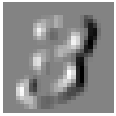
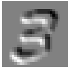
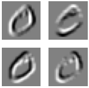

The autoreload extension is already loaded. To reload it, use:
%reload_ext autoreloadThe autoreload extension is already loaded. To reload it, use:
%reload_ext autoreloadThe following is a context manager that allows me to keep error cells whilst still being able to “Run all”.
suplog ()
with suplog(): 5/0Traceback (most recent call last):
File "/var/folders/fy/vg316qk1001227svr6d4d8l40000gn/T/ipykernel_49068/3430919829.py", line 3, in suplog
try: yield
^^^^^
File "/var/folders/fy/vg316qk1001227svr6d4d8l40000gn/T/ipykernel_49068/1494549769.py", line 1, in <module>
with suplog(): 5/0
~^~
ZeroDivisionError: division by zeroI’ll first load in some data.
from pathlib import Pathdata = Path('data/mnist.pkl.gz'); dataPath('data/mnist.pkl.gz')import gzip, pickle
from torch import tensorwith gzip.open(data, 'rb') as f: ((xtrn, ytrn), (xvld, yvld), _) = pickle.load(f, encoding='latin-1')
xtrn, ytrn, xvld, yvld = map(tensor, [xtrn, ytrn, xvld, yvld])xtrn[0].shapetorch.Size([784])from xiaoai.core import *show_image(xtrn[0].view(-1,28,28));A convolution has three pieces: the object, the scanner, and the resulting scan (metaphorically). Respectively, this is the tensor, the kernel, and the activation map. The portion of the tensor being scanned is known as the receptive field.
The amount a kernel shifts across the tensor is known as stride. A stride of 1 means the kernel moves 1 pixel at a time. A stride of 2 means the kernel moves 2 pixels at a time.
When the kernel is over an area, a dot product is performed between the respective areas of the kernel and tensor. In other words, a dot product is performed between the kernel and the receptive field.
Matt Kleinsmith shows this the best.
from matplotlib import rcParams?rcParamsType: RcParams
String form:
_internal.classic_mode: False
agg.path.chunksize: 0
animation.bitrate: -1
animation.codec: h264
a <...> : True
ytick.minor.size: 2.0
ytick.minor.visible: False
ytick.minor.width: 0.6
ytick.right: False
Length: 316
File: ~/miniforge3/envs/default/lib/python3.11/site-packages/matplotlib/__init__.py
Docstring:
A dict-like key-value store for config parameters, including validation.
Validating functions are defined and associated with rc parameters in
:mod:`matplotlib.rcsetup`.
The list of rcParams is:
- _internal.classic_mode
- agg.path.chunksize
- animation.bitrate
- animation.codec
- animation.convert_args
- animation.convert_path
- animation.embed_limit
- animation.ffmpeg_args
- animation.ffmpeg_path
- animation.frame_format
- animation.html
- animation.writer
- axes.autolimit_mode
- axes.axisbelow
- axes.edgecolor
- axes.facecolor
- axes.formatter.limits
- axes.formatter.min_exponent
- axes.formatter.offset_threshold
- axes.formatter.use_locale
- axes.formatter.use_mathtext
- axes.formatter.useoffset
- axes.grid
- axes.grid.axis
- axes.grid.which
- axes.labelcolor
- axes.labelpad
- axes.labelsize
- axes.labelweight
- axes.linewidth
- axes.prop_cycle
- axes.spines.bottom
- axes.spines.left
- axes.spines.right
- axes.spines.top
- axes.titlecolor
- axes.titlelocation
- axes.titlepad
- axes.titlesize
- axes.titleweight
- axes.titley
- axes.unicode_minus
- axes.xmargin
- axes.ymargin
- axes.zmargin
- axes3d.grid
- axes3d.xaxis.panecolor
- axes3d.yaxis.panecolor
- axes3d.zaxis.panecolor
- backend
- backend_fallback
- boxplot.bootstrap
- boxplot.boxprops.color
- boxplot.boxprops.linestyle
- boxplot.boxprops.linewidth
- boxplot.capprops.color
- boxplot.capprops.linestyle
- boxplot.capprops.linewidth
- boxplot.flierprops.color
- boxplot.flierprops.linestyle
- boxplot.flierprops.linewidth
- boxplot.flierprops.marker
- boxplot.flierprops.markeredgecolor
- boxplot.flierprops.markeredgewidth
- boxplot.flierprops.markerfacecolor
- boxplot.flierprops.markersize
- boxplot.meanline
- boxplot.meanprops.color
- boxplot.meanprops.linestyle
- boxplot.meanprops.linewidth
- boxplot.meanprops.marker
- boxplot.meanprops.markeredgecolor
- boxplot.meanprops.markerfacecolor
- boxplot.meanprops.markersize
- boxplot.medianprops.color
- boxplot.medianprops.linestyle
- boxplot.medianprops.linewidth
- boxplot.notch
- boxplot.patchartist
- boxplot.showbox
- boxplot.showcaps
- boxplot.showfliers
- boxplot.showmeans
- boxplot.vertical
- boxplot.whiskerprops.color
- boxplot.whiskerprops.linestyle
- boxplot.whiskerprops.linewidth
- boxplot.whiskers
- contour.algorithm
- contour.corner_mask
- contour.linewidth
- contour.negative_linestyle
- date.autoformatter.day
- date.autoformatter.hour
- date.autoformatter.microsecond
- date.autoformatter.minute
- date.autoformatter.month
- date.autoformatter.second
- date.autoformatter.year
- date.converter
- date.epoch
- date.interval_multiples
- docstring.hardcopy
- errorbar.capsize
- figure.autolayout
- figure.constrained_layout.h_pad
- figure.constrained_layout.hspace
- figure.constrained_layout.use
- figure.constrained_layout.w_pad
- figure.constrained_layout.wspace
- figure.dpi
- figure.edgecolor
- figure.facecolor
- figure.figsize
- figure.frameon
- figure.hooks
- figure.labelsize
- figure.labelweight
- figure.max_open_warning
- figure.raise_window
- figure.subplot.bottom
- figure.subplot.hspace
- figure.subplot.left
- figure.subplot.right
- figure.subplot.top
- figure.subplot.wspace
- figure.titlesize
- figure.titleweight
- font.cursive
- font.family
- font.fantasy
- font.monospace
- font.sans-serif
- font.serif
- font.size
- font.stretch
- font.style
- font.variant
- font.weight
- grid.alpha
- grid.color
- grid.linestyle
- grid.linewidth
- hatch.color
- hatch.linewidth
- hist.bins
- image.aspect
- image.cmap
- image.composite_image
- image.interpolation
- image.lut
- image.origin
- image.resample
- interactive
- keymap.back
- keymap.copy
- keymap.forward
- keymap.fullscreen
- keymap.grid
- keymap.grid_minor
- keymap.help
- keymap.home
- keymap.pan
- keymap.quit
- keymap.quit_all
- keymap.save
- keymap.xscale
- keymap.yscale
- keymap.zoom
- legend.borderaxespad
- legend.borderpad
- legend.columnspacing
- legend.edgecolor
- legend.facecolor
- legend.fancybox
- legend.fontsize
- legend.framealpha
- legend.frameon
- legend.handleheight
- legend.handlelength
- legend.handletextpad
- legend.labelcolor
- legend.labelspacing
- legend.loc
- legend.markerscale
- legend.numpoints
- legend.scatterpoints
- legend.shadow
- legend.title_fontsize
- lines.antialiased
- lines.color
- lines.dash_capstyle
- lines.dash_joinstyle
- lines.dashdot_pattern
- lines.dashed_pattern
- lines.dotted_pattern
- lines.linestyle
- lines.linewidth
- lines.marker
- lines.markeredgecolor
- lines.markeredgewidth
- lines.markerfacecolor
- lines.markersize
- lines.scale_dashes
- lines.solid_capstyle
- lines.solid_joinstyle
- macosx.window_mode
- markers.fillstyle
- mathtext.bf
- mathtext.bfit
- mathtext.cal
- mathtext.default
- mathtext.fallback
- mathtext.fontset
- mathtext.it
- mathtext.rm
- mathtext.sf
- mathtext.tt
- patch.antialiased
- patch.edgecolor
- patch.facecolor
- patch.force_edgecolor
- patch.linewidth
- path.effects
- path.simplify
- path.simplify_threshold
- path.sketch
- path.snap
- pcolor.shading
- pcolormesh.snap
- pdf.compression
- pdf.fonttype
- pdf.inheritcolor
- pdf.use14corefonts
- pgf.preamble
- pgf.rcfonts
- pgf.texsystem
- polaraxes.grid
- ps.distiller.res
- ps.fonttype
- ps.papersize
- ps.useafm
- ps.usedistiller
- savefig.bbox
- savefig.directory
- savefig.dpi
- savefig.edgecolor
- savefig.facecolor
- savefig.format
- savefig.orientation
- savefig.pad_inches
- savefig.transparent
- scatter.edgecolors
- scatter.marker
- svg.fonttype
- svg.hashsalt
- svg.image_inline
- text.antialiased
- text.color
- text.hinting
- text.hinting_factor
- text.kerning_factor
- text.latex.preamble
- text.parse_math
- text.usetex
- timezone
- tk.window_focus
- toolbar
- webagg.address
- webagg.open_in_browser
- webagg.port
- webagg.port_retries
- xaxis.labellocation
- xtick.alignment
- xtick.bottom
- xtick.color
- xtick.direction
- xtick.labelbottom
- xtick.labelcolor
- xtick.labelsize
- xtick.labeltop
- xtick.major.bottom
- xtick.major.pad
- xtick.major.size
- xtick.major.top
- xtick.major.width
- xtick.minor.bottom
- xtick.minor.ndivs
- xtick.minor.pad
- xtick.minor.size
- xtick.minor.top
- xtick.minor.visible
- xtick.minor.width
- xtick.top
- yaxis.labellocation
- ytick.alignment
- ytick.color
- ytick.direction
- ytick.labelcolor
- ytick.labelleft
- ytick.labelright
- ytick.labelsize
- ytick.left
- ytick.major.left
- ytick.major.pad
- ytick.major.right
- ytick.major.size
- ytick.major.width
- ytick.minor.left
- ytick.minor.ndivs
- ytick.minor.pad
- ytick.minor.right
- ytick.minor.size
- ytick.minor.visible
- ytick.minor.width
- ytick.right
See Also
--------
:ref:`customizing-with-matplotlibrc-files`rcParams['image.cmap'] = 'gray'
rcParams['figure.dpi'] = 30ximgs,xvimgs = xtrn.view(-1,28,28), xvld.view(-1,28,28)im3 = ximgs[7]
show_image(im3);Let’s create a kernel that detects a digit’s top edge.
top_edge = tensor([[-1,-1,-1],
[ 0, 0, 0],
[ 1, 1, 1]]).float()show_image(top_edge, noframe=False);Let’s also visualize how it detects so.
import pandas as pddf = pd.DataFrame(im3[:13,:23])
df.style.format(precision=2).set_properties(**{'font-size':'7pt'}).background_gradient('Greys')| 0 | 1 | 2 | 3 | 4 | 5 | 6 | 7 | 8 | 9 | 10 | 11 | 12 | 13 | 14 | 15 | 16 | 17 | 18 | 19 | 20 | 21 | 22 | |
|---|---|---|---|---|---|---|---|---|---|---|---|---|---|---|---|---|---|---|---|---|---|---|---|
| 0 | 0.00 | 0.00 | 0.00 | 0.00 | 0.00 | 0.00 | 0.00 | 0.00 | 0.00 | 0.00 | 0.00 | 0.00 | 0.00 | 0.00 | 0.00 | 0.00 | 0.00 | 0.00 | 0.00 | 0.00 | 0.00 | 0.00 | 0.00 |
| 1 | 0.00 | 0.00 | 0.00 | 0.00 | 0.00 | 0.00 | 0.00 | 0.00 | 0.00 | 0.00 | 0.00 | 0.00 | 0.00 | 0.00 | 0.00 | 0.00 | 0.00 | 0.00 | 0.00 | 0.00 | 0.00 | 0.00 | 0.00 |
| 2 | 0.00 | 0.00 | 0.00 | 0.00 | 0.00 | 0.00 | 0.00 | 0.00 | 0.00 | 0.00 | 0.00 | 0.00 | 0.00 | 0.00 | 0.00 | 0.00 | 0.00 | 0.00 | 0.00 | 0.00 | 0.00 | 0.00 | 0.00 |
| 3 | 0.00 | 0.00 | 0.00 | 0.00 | 0.00 | 0.00 | 0.00 | 0.00 | 0.00 | 0.00 | 0.00 | 0.00 | 0.00 | 0.00 | 0.00 | 0.00 | 0.00 | 0.00 | 0.00 | 0.00 | 0.00 | 0.00 | 0.00 |
| 4 | 0.00 | 0.00 | 0.00 | 0.00 | 0.00 | 0.00 | 0.00 | 0.00 | 0.00 | 0.00 | 0.00 | 0.00 | 0.00 | 0.00 | 0.00 | 0.00 | 0.00 | 0.00 | 0.00 | 0.00 | 0.00 | 0.00 | 0.00 |
| 5 | 0.00 | 0.00 | 0.00 | 0.00 | 0.00 | 0.00 | 0.00 | 0.00 | 0.00 | 0.00 | 0.00 | 0.15 | 0.17 | 0.41 | 1.00 | 0.99 | 0.99 | 0.99 | 0.99 | 0.99 | 0.68 | 0.02 | 0.00 |
| 6 | 0.00 | 0.00 | 0.00 | 0.00 | 0.00 | 0.00 | 0.00 | 0.00 | 0.00 | 0.17 | 0.54 | 0.88 | 0.88 | 0.98 | 0.99 | 0.98 | 0.98 | 0.98 | 0.98 | 0.98 | 0.98 | 0.62 | 0.05 |
| 7 | 0.00 | 0.00 | 0.00 | 0.00 | 0.00 | 0.00 | 0.00 | 0.00 | 0.00 | 0.70 | 0.98 | 0.98 | 0.98 | 0.98 | 0.99 | 0.98 | 0.98 | 0.98 | 0.98 | 0.98 | 0.98 | 0.98 | 0.23 |
| 8 | 0.00 | 0.00 | 0.00 | 0.00 | 0.00 | 0.00 | 0.00 | 0.00 | 0.00 | 0.43 | 0.98 | 0.98 | 0.90 | 0.52 | 0.52 | 0.52 | 0.52 | 0.74 | 0.98 | 0.98 | 0.98 | 0.98 | 0.23 |
| 9 | 0.00 | 0.00 | 0.00 | 0.00 | 0.00 | 0.00 | 0.00 | 0.00 | 0.00 | 0.02 | 0.11 | 0.11 | 0.09 | 0.00 | 0.00 | 0.00 | 0.00 | 0.05 | 0.88 | 0.98 | 0.98 | 0.67 | 0.03 |
| 10 | 0.00 | 0.00 | 0.00 | 0.00 | 0.00 | 0.00 | 0.00 | 0.00 | 0.00 | 0.00 | 0.00 | 0.00 | 0.00 | 0.00 | 0.00 | 0.00 | 0.00 | 0.33 | 0.95 | 0.98 | 0.98 | 0.56 | 0.00 |
| 11 | 0.00 | 0.00 | 0.00 | 0.00 | 0.00 | 0.00 | 0.00 | 0.00 | 0.00 | 0.00 | 0.00 | 0.00 | 0.00 | 0.00 | 0.00 | 0.00 | 0.34 | 0.74 | 0.98 | 0.98 | 0.98 | 0.05 | 0.00 |
| 12 | 0.00 | 0.00 | 0.00 | 0.00 | 0.00 | 0.00 | 0.00 | 0.00 | 0.00 | 0.00 | 0.00 | 0.00 | 0.00 | 0.00 | 0.36 | 0.83 | 0.96 | 0.98 | 0.98 | 0.98 | 0.80 | 0.04 | 0.00 |
show_image(im3[3:6,13:16]);top_edge.shape, im3[3:6,13:16].shape(torch.Size([3, 3]), torch.Size([3, 3]))(top_edge*im3[3:6,13:16]).sum()tensor(2.3945)The result is a value of 2.39.
Now let’s try the bottom most edge of the very same portion of the digit.
show_image(im3[9:12,10:13]);(top_edge*im3[9:12,10:13]).sum()tensor(-0.3203)We have a negative result. Imagine the kernel, well this kernel at least, as a spectrum of sorts. While the kernel was intended to detect a top edge, it also managed to detect a bottom edge by outputting a negative value. A larger value indicates the edge is more like a top edge, and a smaller value indicates the edge is more likely a bottom edge.
def apply_kernel(row, col, kernel): return (kernel*im3[row-1:row+2,col-1:col+2]).sum()apply_kernel(10,11,top_edge)tensor(-0.3203)Let’s now apply the kernel to the entire image.
for r in range(im3.shape[0]): print(r)0
1
2
3
4
5
6
7
8
9
10
11
12
13
14
15
16
17
18
19
20
21
22
23
24
25
26
27detect = torch.zeros_like(im3); detect.shapetorch.Size([28, 28])As the kernel has a stride of 1, and no other fancy processing techniques are being applied, a 1 pixel region around the tensor will be lost. This will result in 26x26 pixel activation map.
rng = range(1,27)
top_edge3 = tensor([[apply_kernel(r,c,top_edge) for c in rng] for r in rng])
top_edge3.shape, show_image(top_edge3)Let’s now detect left edges.
top_edge, show_image(top_edge, noframe=False)(tensor([[-1., -1., -1.],
[ 0., 0., 0.],
[ 1., 1., 1.]]),
<Axes: >)
left_edge = tensor([[-1,0,1],
[-1,0,1],
[-1,0,1]]).float()show_image(left_edge, noframe=False)
left_edge3 = tensor([[apply_kernel(r,c,left_edge) for c in rng] for r in rng])
show_image(left_edge3);
Here, I attempt to reimplemenet im2col, which is a much more efficient way to speed up convolutions, as also demonstrated in this 2006 paper.
im2col reshapes the input tensors to form a series of compatible dot products. This eliminates the use of for loops when performing a convolution.
show_image(im3);
im3.shapetorch.Size([28, 28])I’ll assume a 2x2 kernel. This would mean that the pixels at positions (0,0), (0,1), (1,0), and (1,1) in the receptive field will need to be rerranged to form one row of the new matrix.
im3[0,0], im3[0,1], im3[1,0], im3[1,1](tensor(0.), tensor(0.), tensor(0.), tensor(0.))With stride 1, the next pixels to be rearranged would be at positions (0,1), (0,2), (1,1), and (1,2).
im3[0,1], im3[0,2], im3[1,1], im3[1,2](tensor(0.), tensor(0.), tensor(0.), tensor(0.))The next pixels are at (0,2), (0,3), (1,2), and (1,3).
im3[0,2], im3[0,3], im3[1,2], im3[1,3](tensor(0.), tensor(0.), tensor(0.), tensor(0.))Once the end of the zeroth row is reached, and we shift to the next row, the new pixels would be at positions (1,0), (1,1), (2,0), and (2,1).
im3[1,0], im3[1,1], im3[2,0], im3[2,1](tensor(0.), tensor(0.), tensor(0.), tensor(0.))Then the next group of pixels are (1,1), (1,2), (2,1), and (2,2).
im3[1,1], im3[1,2], im3[2,1], im3[2,2](tensor(0.), tensor(0.), tensor(0.), tensor(0.))I’ll create a preliminary reshaping loop.
matrix = []
for r in range(im3.shape[0]-1):
for c in range(im3.shape[1]-1):
matrix.append(tensor([im3[r,c], im3[r,c+1], im3[r+1,c], im3[r+1,c+1]]))len(matrix)729matrix = torch.stack(matrix); matrix.shape, matrix(torch.Size([729, 4]),
tensor([[0., 0., 0., 0.],
[0., 0., 0., 0.],
[0., 0., 0., 0.],
...,
[0., 0., 0., 0.],
[0., 0., 0., 0.],
[0., 0., 0., 0.]]))show_image(matrix);That seems to work; I’ll encapsulate.
def im2col(im:torch.Tensor):
matrix = []
for r in range(im.shape[0]-1):
for c in range(im3.shape[1]-1):
matrix.append(tensor([im[r ,c], im[r ,c+1],
im[r+1,c], im[r+1,c+1]
]))
return torch.stack(matrix)I’ll now confirm that my function matches the prior matrix.
from fastcore.all import *test_eq(matrix, im2col(im3))For a 3x3 kernel, we simply need to branch out 2 places from the kernel’s anchor point.
matrix = []
for r in range(im3.shape[0]-3):
for c in range(im3.shape[1]-3):
matrix.append(tensor([im3[r ,c], im3[r ,c+1], im3[r ,c+2],
im3[r+1,c], im3[r+1,c+1], im3[r+1,c+2],
im3[r+2,c], im3[r+2,c+1], im3[r+2,c+2]
]))matrix = torch.stack(matrix); matrix.shapetorch.Size([625, 9])show_image(matrix);In a 2x2 kernel, we branch out only 1 place. In a 3x3 kernel, we branch out 2.
im3[0:2,0:2], im3[0:3,0:3](tensor([[0., 0.],
[0., 0.]]),
tensor([[0., 0., 0.],
[0., 0., 0.],
[0., 0., 0.]]))Manually specifying all items of the tensor will not be feasible. Therefore, I need to figure out a slicing operation that will handle it for us.
im3[0:0+3,0:0+3]tensor([[0., 0., 0.],
[0., 0., 0.],
[0., 0., 0.]])t = tensor([[1,2,3,4],
[5,6,7,8],
[9,10,11,12],
[13,14,15,16]]); ttensor([[ 1, 2, 3, 4],
[ 5, 6, 7, 8],
[ 9, 10, 11, 12],
[13, 14, 15, 16]])t[0:0+3,0:0+3], t[0:0+3,0:0+3].flatten()(tensor([[ 1, 2, 3],
[ 5, 6, 7],
[ 9, 10, 11]]),
tensor([ 1, 2, 3, 5, 6, 7, 9, 10, 11]))m2 = []
for r in range(im3.shape[0]-3):
for c in range(im3.shape[1]-3):
m2.append(im3[r:r+3, c:c+3].flatten())m2 = torch.stack(m2); m2.shapetorch.Size([625, 9])test_eq(m2, matrix)My slicing operation implementation matches my prior implementation. Time to encapsulate.
def im2col(im:torch.Tensor, kw:int, kh:int):
matrix = []
for r in range(im.shape[0]-kw):
for c in range(im.shape[0]-kh):
matrix.append(tensor(im[r:r+kw, c:c+kh]).flatten())
return torch.stack(matrix)test_eq(im2col(im3,3,3), matrix)/var/folders/fy/vg316qk1001227svr6d4d8l40000gn/T/ipykernel_49068/2292503785.py:5: UserWarning: To copy construct from a tensor, it is recommended to use sourceTensor.clone().detach() or sourceTensor.clone().detach().requires_grad_(True), rather than torch.tensor(sourceTensor).
matrix.append(tensor(im[r:r+kw, c:c+kh]).flatten())Right now, I’m assuming my im2col implementation is correct. I’m going to verify whether it actually is by comparing it against PyTorch’s F.unfold.
import torch.nn.functional as F?F.unfoldSignature:
F.unfold(
input: torch.Tensor,
kernel_size: None,
dilation: None = 1,
padding: None = 0,
stride: None = 1,
) -> torch.Tensor
Docstring:
Extract sliding local blocks from a batched input tensor.
.. warning::
Currently, only 4-D input tensors (batched image-like tensors) are
supported.
.. warning::
More than one element of the unfolded tensor may refer to a single
memory location. As a result, in-place operations (especially ones that
are vectorized) may result in incorrect behavior. If you need to write
to the tensor, please clone it first.
See :class:`torch.nn.Unfold` for details
File: ~/miniforge3/envs/default/lib/python3.11/site-packages/torch/nn/functional.py
Type: functionF.unfold requires a 4D tensor to work.
im3[None,None,...].shapetorch.Size([1, 1, 28, 28])F.unfold(im3[None,None,...],(3,3)).shapetorch.Size([1, 9, 676])Technically, my im2col function is im2row. So I’ll have to permute the resulting tensor to match dimensions.
im2col(im3,3,3).shape, im2col(im3,3,3).permute(1,0).shape/var/folders/fy/vg316qk1001227svr6d4d8l40000gn/T/ipykernel_49068/2292503785.py:5: UserWarning: To copy construct from a tensor, it is recommended to use sourceTensor.clone().detach() or sourceTensor.clone().detach().requires_grad_(True), rather than torch.tensor(sourceTensor).
matrix.append(tensor(im[r:r+kw, c:c+kh]).flatten())(torch.Size([625, 9]), torch.Size([9, 625]))Aaand we can already see that my implementation is incorrect.
with suplog(): test_eq(im2col(im3,3,3).permute(1,0), F.unfold(im3[None,None,...],(3,3))[0,...])/var/folders/fy/vg316qk1001227svr6d4d8l40000gn/T/ipykernel_49068/2292503785.py:5: UserWarning: To copy construct from a tensor, it is recommended to use sourceTensor.clone().detach() or sourceTensor.clone().detach().requires_grad_(True), rather than torch.tensor(sourceTensor).
matrix.append(tensor(im[r:r+kw, c:c+kh]).flatten())
Traceback (most recent call last):
File "/var/folders/fy/vg316qk1001227svr6d4d8l40000gn/T/ipykernel_49068/3430919829.py", line 3, in suplog
try: yield
^^^^^
File "/var/folders/fy/vg316qk1001227svr6d4d8l40000gn/T/ipykernel_49068/723384084.py", line 1, in <module>
with suplog(): test_eq(im2col(im3,3,3).permute(1,0), F.unfold(im3[None,None,...],(3,3))[0,...])
^^^^^^^^^^^^^^^^^^^^^^^^^^^^^^^^^^^^^^^^^^^^^^^^^^^^^^^^^^^^^^^^^^^^^^^^^^^^^^^^
File "/Users/salmannaqvi/miniforge3/envs/default/lib/python3.11/site-packages/fastcore/test.py", line 39, in test_eq
test(a,b,equals, cname='==')
File "/Users/salmannaqvi/miniforge3/envs/default/lib/python3.11/site-packages/fastcore/test.py", line 29, in test
assert cmp(a,b),f"{cname}:\n{a}\n{b}"
^^^^^^^^
File "/Users/salmannaqvi/miniforge3/envs/default/lib/python3.11/site-packages/fastcore/imports.py", line 69, in equals
return cmp(a,b)
^^^^^^^^
File "/Users/salmannaqvi/miniforge3/envs/default/lib/python3.11/site-packages/fastcore/imports.py", line 52, in array_equal
if isinstance_str(a, 'ndarray') and isinstance_str(b, 'ndarray'): return (a==b).all()
^^^^
ValueError: operands could not be broadcast together with shapes (9,625) (9,676) PyTorch’s base implementation reduces our 28x28 image to a 26x26 image. My implementation loses an additional border of pixels, resulting in a 25x25 image.
625**.5, 676**.5(25.0, 26.0)I’m going to see if the issue pertains to the range of the for loops.
def im2col(im:torch.Tensor, kw:int, kh:int):
matrix = []
for r in range(im.shape[0]-kw+1):
for c in range(im.shape[0]-kh+1):
matrix.append(tensor(im[r:r+kw, c:c+kh]).flatten())
return torch.stack(matrix)im2col(tensor([[1,2,3,4],[5,6,7,8],[9,10,11,12],[13,14,15,16]]), 3,3)/var/folders/fy/vg316qk1001227svr6d4d8l40000gn/T/ipykernel_49068/4074321543.py:5: UserWarning: To copy construct from a tensor, it is recommended to use sourceTensor.clone().detach() or sourceTensor.clone().detach().requires_grad_(True), rather than torch.tensor(sourceTensor).
matrix.append(tensor(im[r:r+kw, c:c+kh]).flatten())tensor([[ 1, 2, 3, 5, 6, 7, 9, 10, 11],
[ 2, 3, 4, 6, 7, 8, 10, 11, 12],
[ 5, 6, 7, 9, 10, 11, 13, 14, 15],
[ 6, 7, 8, 10, 11, 12, 14, 15, 16]])test_eq(im2col(im3,3,3).permute(1,0), F.unfold(im3[None,None,...],(3,3))[0,...])/var/folders/fy/vg316qk1001227svr6d4d8l40000gn/T/ipykernel_49068/4074321543.py:5: UserWarning: To copy construct from a tensor, it is recommended to use sourceTensor.clone().detach() or sourceTensor.clone().detach().requires_grad_(True), rather than torch.tensor(sourceTensor).
matrix.append(tensor(im[r:r+kw, c:c+kh]).flatten())It did indeed! I’ll now test whether nonsquare kernels correctly work.
test_eq(im2col(im3,2,3).permute(1,0), F.unfold(im3[None,None,...],(2,3))[0,...])/var/folders/fy/vg316qk1001227svr6d4d8l40000gn/T/ipykernel_49068/4074321543.py:5: UserWarning: To copy construct from a tensor, it is recommended to use sourceTensor.clone().detach() or sourceTensor.clone().detach().requires_grad_(True), rather than torch.tensor(sourceTensor).
matrix.append(tensor(im[r:r+kw, c:c+kh]).flatten())They do! I’ll now add padding functionality.
ttensor([[ 1, 2, 3, 4],
[ 5, 6, 7, 8],
[ 9, 10, 11, 12],
[13, 14, 15, 16]])?torch.zerosDocstring:
zeros(*size, *, out=None, dtype=None, layout=torch.strided, device=None, requires_grad=False) -> Tensor
Returns a tensor filled with the scalar value `0`, with the shape defined
by the variable argument :attr:`size`.
Args:
size (int...): a sequence of integers defining the shape of the output tensor.
Can be a variable number of arguments or a collection like a list or tuple.
Keyword args:
out (Tensor, optional): the output tensor.
dtype (:class:`torch.dtype`, optional): the desired data type of returned tensor.
Default: if ``None``, uses a global default (see :func:`torch.set_default_dtype`).
layout (:class:`torch.layout`, optional): the desired layout of returned Tensor.
Default: ``torch.strided``.
device (:class:`torch.device`, optional): the desired device of returned tensor.
Default: if ``None``, uses the current device for the default tensor type
(see :func:`torch.set_default_device`). :attr:`device` will be the CPU
for CPU tensor types and the current CUDA device for CUDA tensor types.
requires_grad (bool, optional): If autograd should record operations on the
returned tensor. Default: ``False``.
Example::
>>> torch.zeros(2, 3)
tensor([[ 0., 0., 0.],
[ 0., 0., 0.]])
>>> torch.zeros(5)
tensor([ 0., 0., 0., 0., 0.])
Type: builtin_function_or_methodtorch.zeros(1, t.shape[1])tensor([[0., 0., 0., 0.]])t_ = torch.concat([t, torch.zeros(1,t.shape[1], dtype=int)]); t_tensor([[ 1, 2, 3, 4],
[ 5, 6, 7, 8],
[ 9, 10, 11, 12],
[13, 14, 15, 16],
[ 0, 0, 0, 0]])t_ = torch.concat([torch.zeros(1,t.shape[1], dtype=int),t_]); t_tensor([[ 0, 0, 0, 0],
[ 1, 2, 3, 4],
[ 5, 6, 7, 8],
[ 9, 10, 11, 12],
[13, 14, 15, 16],
[ 0, 0, 0, 0]])?torch.concatDocstring:
concat(tensors, dim=0, *, out=None) -> Tensor
Alias of :func:`torch.cat`.
Type: builtin_function_or_methodt_.shapetorch.Size([6, 4])torch.zeros(t_.shape[0],dtype=int)tensor([0, 0, 0, 0, 0, 0])t_ = torch.concat([torch.zeros(t_.shape[0],1,dtype=int),t_],dim=1); t_tensor([[ 0, 0, 0, 0, 0],
[ 0, 1, 2, 3, 4],
[ 0, 5, 6, 7, 8],
[ 0, 9, 10, 11, 12],
[ 0, 13, 14, 15, 16],
[ 0, 0, 0, 0, 0]])t_ = torch.concat([t_,torch.zeros(t_.shape[0],1,dtype=int)],dim=1); t_tensor([[ 0, 0, 0, 0, 0, 0],
[ 0, 1, 2, 3, 4, 0],
[ 0, 5, 6, 7, 8, 0],
[ 0, 9, 10, 11, 12, 0],
[ 0, 13, 14, 15, 16, 0],
[ 0, 0, 0, 0, 0, 0]])?F.padSignature:
F.pad(
input: torch.Tensor,
pad: List[int],
mode: str = 'constant',
value: Optional[float] = None,
) -> torch.Tensor
Docstring:
pad(input, pad, mode="constant", value=None) -> Tensor
Pads tensor.
Padding size:
The padding size by which to pad some dimensions of :attr:`input`
are described starting from the last dimension and moving forward.
:math:`\left\lfloor\frac{\text{len(pad)}}{2}\right\rfloor` dimensions
of ``input`` will be padded.
For example, to pad only the last dimension of the input tensor, then
:attr:`pad` has the form
:math:`(\text{padding\_left}, \text{padding\_right})`;
to pad the last 2 dimensions of the input tensor, then use
:math:`(\text{padding\_left}, \text{padding\_right},`
:math:`\text{padding\_top}, \text{padding\_bottom})`;
to pad the last 3 dimensions, use
:math:`(\text{padding\_left}, \text{padding\_right},`
:math:`\text{padding\_top}, \text{padding\_bottom}`
:math:`\text{padding\_front}, \text{padding\_back})`.
Padding mode:
See :class:`torch.nn.CircularPad2d`, :class:`torch.nn.ConstantPad2d`,
:class:`torch.nn.ReflectionPad2d`, and :class:`torch.nn.ReplicationPad2d`
for concrete examples on how each of the padding modes works. Constant
padding is implemented for arbitrary dimensions. Circular, replicate and
reflection padding are implemented for padding the last 3 dimensions of a
4D or 5D input tensor, the last 2 dimensions of a 3D or 4D input tensor,
or the last dimension of a 2D or 3D input tensor.
Note:
When using the CUDA backend, this operation may induce nondeterministic
behaviour in its backward pass that is not easily switched off.
Please see the notes on :doc:`/notes/randomness` for background.
Args:
input (Tensor): N-dimensional tensor
pad (tuple): m-elements tuple, where
:math:`\frac{m}{2} \leq` input dimensions and :math:`m` is even.
mode: ``'constant'``, ``'reflect'``, ``'replicate'`` or ``'circular'``.
Default: ``'constant'``
value: fill value for ``'constant'`` padding. Default: ``0``
Examples::
>>> t4d = torch.empty(3, 3, 4, 2)
>>> p1d = (1, 1) # pad last dim by 1 on each side
>>> out = F.pad(t4d, p1d, "constant", 0) # effectively zero padding
>>> print(out.size())
torch.Size([3, 3, 4, 4])
>>> p2d = (1, 1, 2, 2) # pad last dim by (1, 1) and 2nd to last by (2, 2)
>>> out = F.pad(t4d, p2d, "constant", 0)
>>> print(out.size())
torch.Size([3, 3, 8, 4])
>>> t4d = torch.empty(3, 3, 4, 2)
>>> p3d = (0, 1, 2, 1, 3, 3) # pad by (0, 1), (2, 1), and (3, 3)
>>> out = F.pad(t4d, p3d, "constant", 0)
>>> print(out.size())
torch.Size([3, 9, 7, 3])
File: ~/miniforge3/envs/default/lib/python3.11/site-packages/torch/nn/functional.py
Type: functionF.pad(t,(1,1))tensor([[ 0, 1, 2, 3, 4, 0],
[ 0, 5, 6, 7, 8, 0],
[ 0, 9, 10, 11, 12, 0],
[ 0, 13, 14, 15, 16, 0]])F.pad(t,(1,1,1,1))tensor([[ 0, 0, 0, 0, 0, 0],
[ 0, 1, 2, 3, 4, 0],
[ 0, 5, 6, 7, 8, 0],
[ 0, 9, 10, 11, 12, 0],
[ 0, 13, 14, 15, 16, 0],
[ 0, 0, 0, 0, 0, 0]])??F.padSignature:
F.pad(
input: torch.Tensor,
pad: List[int],
mode: str = 'constant',
value: Optional[float] = None,
) -> torch.Tensor
Source:
def pad(input: Tensor, pad: List[int], mode: str = "constant", value: Optional[float] = None) -> Tensor:
r"""
pad(input, pad, mode="constant", value=None) -> Tensor
Pads tensor.
Padding size:
The padding size by which to pad some dimensions of :attr:`input`
are described starting from the last dimension and moving forward.
:math:`\left\lfloor\frac{\text{len(pad)}}{2}\right\rfloor` dimensions
of ``input`` will be padded.
For example, to pad only the last dimension of the input tensor, then
:attr:`pad` has the form
:math:`(\text{padding\_left}, \text{padding\_right})`;
to pad the last 2 dimensions of the input tensor, then use
:math:`(\text{padding\_left}, \text{padding\_right},`
:math:`\text{padding\_top}, \text{padding\_bottom})`;
to pad the last 3 dimensions, use
:math:`(\text{padding\_left}, \text{padding\_right},`
:math:`\text{padding\_top}, \text{padding\_bottom}`
:math:`\text{padding\_front}, \text{padding\_back})`.
Padding mode:
See :class:`torch.nn.CircularPad2d`, :class:`torch.nn.ConstantPad2d`,
:class:`torch.nn.ReflectionPad2d`, and :class:`torch.nn.ReplicationPad2d`
for concrete examples on how each of the padding modes works. Constant
padding is implemented for arbitrary dimensions. Circular, replicate and
reflection padding are implemented for padding the last 3 dimensions of a
4D or 5D input tensor, the last 2 dimensions of a 3D or 4D input tensor,
or the last dimension of a 2D or 3D input tensor.
Note:
When using the CUDA backend, this operation may induce nondeterministic
behaviour in its backward pass that is not easily switched off.
Please see the notes on :doc:`/notes/randomness` for background.
Args:
input (Tensor): N-dimensional tensor
pad (tuple): m-elements tuple, where
:math:`\frac{m}{2} \leq` input dimensions and :math:`m` is even.
mode: ``'constant'``, ``'reflect'``, ``'replicate'`` or ``'circular'``.
Default: ``'constant'``
value: fill value for ``'constant'`` padding. Default: ``0``
Examples::
>>> t4d = torch.empty(3, 3, 4, 2)
>>> p1d = (1, 1) # pad last dim by 1 on each side
>>> out = F.pad(t4d, p1d, "constant", 0) # effectively zero padding
>>> print(out.size())
torch.Size([3, 3, 4, 4])
>>> p2d = (1, 1, 2, 2) # pad last dim by (1, 1) and 2nd to last by (2, 2)
>>> out = F.pad(t4d, p2d, "constant", 0)
>>> print(out.size())
torch.Size([3, 3, 8, 4])
>>> t4d = torch.empty(3, 3, 4, 2)
>>> p3d = (0, 1, 2, 1, 3, 3) # pad by (0, 1), (2, 1), and (3, 3)
>>> out = F.pad(t4d, p3d, "constant", 0)
>>> print(out.size())
torch.Size([3, 9, 7, 3])
"""
if has_torch_function_unary(input):
return handle_torch_function(
torch.nn.functional.pad, (input,), input, pad, mode=mode, value=value)
if not torch.jit.is_scripting():
if torch.are_deterministic_algorithms_enabled() and input.is_cuda:
if mode == 'replicate':
# Use slow decomp whose backward will be in terms of index_put.
# importlib is required because the import cannot be top level
# (cycle) and cannot be nested (TS doesn't support)
return importlib.import_module('torch._decomp.decompositions')._replication_pad(
input, pad
)
return torch._C._nn.pad(input, pad, mode, value)
File: ~/miniforge3/envs/default/lib/python3.11/site-packages/torch/nn/functional.py
Type: functionI have a hunch my concatenation approach to padding is quite slow. I’m going to time it.
t_ = torch.concat((t, torch.zeros(1,t.shape[1], dtype=int)))
t_ = torch.concat((torch.zeros(1,t.shape[1], dtype=int),t_))
t_ = torch.concat((torch.zeros(t_.shape[0],1,dtype=int),t_),dim=1)
t_ = torch.concat((t_,torch.zeros(t_.shape[0],1,dtype=int)),dim=1)26.1 μs ± 40.3 ns per loop (mean ± std. dev. of 7 runs, 10,000 loops each)In a vacuum, 21.4μs seems pretty quick! But let’s time F.pad and see how quick it runs.
6.96 μs ± 16.1 ns per loop (mean ± std. dev. of 7 runs, 100,000 loops each)Much quicker! Roughly a 3-4x speed up!
An alternative approach I can try is to create a tensor of zeros that is the size of our input tensor plus the padding amount.
t_ = torch.zeros(t.shape); t_.shapetorch.Size([4, 4])t_ = torch.zeros(t.shape[0]+2,t.shape[1]+2, dtype=int); t_, t_.shape(tensor([[0, 0, 0, 0, 0, 0],
[0, 0, 0, 0, 0, 0],
[0, 0, 0, 0, 0, 0],
[0, 0, 0, 0, 0, 0],
[0, 0, 0, 0, 0, 0],
[0, 0, 0, 0, 0, 0]]),
torch.Size([6, 6]))t[0,:]tensor([1, 2, 3, 4])t_[1,1:-2]tensor([0, 0, 0])t, t[1,1:-2], t[1,1:-1](tensor([[ 1, 2, 3, 4],
[ 5, 6, 7, 8],
[ 9, 10, 11, 12],
[13, 14, 15, 16]]),
tensor([6]),
tensor([6, 7]))t_[1,1:-1] = t[0,:]; t_tensor([[0, 0, 0, 0, 0, 0],
[0, 1, 2, 3, 4, 0],
[0, 0, 0, 0, 0, 0],
[0, 0, 0, 0, 0, 0],
[0, 0, 0, 0, 0, 0],
[0, 0, 0, 0, 0, 0]])t[1:3,1:-1]tensor([[ 6, 7],
[10, 11]])t_[1:t.shape[0]+1,1:-1] = t; t_tensor([[ 0, 0, 0, 0, 0, 0],
[ 0, 1, 2, 3, 4, 0],
[ 0, 5, 6, 7, 8, 0],
[ 0, 9, 10, 11, 12, 0],
[ 0, 13, 14, 15, 16, 0],
[ 0, 0, 0, 0, 0, 0]])t_ = torch.zeros(t.shape[0]+2,t.shape[1]+2, dtype=int)
t_[1:t.shape[0]+1,1:-1] = t7.34 μs ± 17.6 ns per loop (mean ± std. dev. of 7 runs, 100,000 loops each)And now I roughly match PyTorch’s speed. I’ll now add this padding logic to my function.
I plan to either let padding be automatically calculated, if the kernel is square of a negative size, or for the padding to be manually specified.
For autocalculation, the general rule of thumb is to floor divide the kernel size by 2. This keeps the resulting activation map the same size as the input tensor, given the kernel is an odd square.
bool(0), bool(1)(False, True)padding = 5//2; padding2t.shapetorch.Size([4, 4])t_ = torch.zeros(t.shape[0]+padding*2,t.shape[1]+padding*2,dtype=int); t_tensor([[0, 0, 0, 0, 0, 0, 0, 0],
[0, 0, 0, 0, 0, 0, 0, 0],
[0, 0, 0, 0, 0, 0, 0, 0],
[0, 0, 0, 0, 0, 0, 0, 0],
[0, 0, 0, 0, 0, 0, 0, 0],
[0, 0, 0, 0, 0, 0, 0, 0],
[0, 0, 0, 0, 0, 0, 0, 0],
[0, 0, 0, 0, 0, 0, 0, 0]])padding = 7//2
t_ = torch.zeros(t.shape[0]+padding*2,t.shape[1]+padding*2,dtype=int); t_tensor([[0, 0, 0, 0, 0, 0, 0, 0, 0, 0],
[0, 0, 0, 0, 0, 0, 0, 0, 0, 0],
[0, 0, 0, 0, 0, 0, 0, 0, 0, 0],
[0, 0, 0, 0, 0, 0, 0, 0, 0, 0],
[0, 0, 0, 0, 0, 0, 0, 0, 0, 0],
[0, 0, 0, 0, 0, 0, 0, 0, 0, 0],
[0, 0, 0, 0, 0, 0, 0, 0, 0, 0],
[0, 0, 0, 0, 0, 0, 0, 0, 0, 0],
[0, 0, 0, 0, 0, 0, 0, 0, 0, 0],
[0, 0, 0, 0, 0, 0, 0, 0, 0, 0]])t_[padding:-padding,padding:-padding] = t; t_tensor([[ 0, 0, 0, 0, 0, 0, 0, 0, 0, 0],
[ 0, 0, 0, 0, 0, 0, 0, 0, 0, 0],
[ 0, 0, 0, 0, 0, 0, 0, 0, 0, 0],
[ 0, 0, 0, 1, 2, 3, 4, 0, 0, 0],
[ 0, 0, 0, 5, 6, 7, 8, 0, 0, 0],
[ 0, 0, 0, 9, 10, 11, 12, 0, 0, 0],
[ 0, 0, 0, 13, 14, 15, 16, 0, 0, 0],
[ 0, 0, 0, 0, 0, 0, 0, 0, 0, 0],
[ 0, 0, 0, 0, 0, 0, 0, 0, 0, 0],
[ 0, 0, 0, 0, 0, 0, 0, 0, 0, 0]])def im2col(im:torch.Tensor, kw:int, kh:int, pad:bool|int=0):
im_ = im
if pad:
if (kw==kh) and (kw%2==1) : pad=kw//2
im_ = torch.zeros(im.shape[0]+pad*2, im.shape[1]+pad*2, dtype=int)
im_[pad:-pad,pad:-pad] = im
matrix = []
for r in range(im_.shape[0]-kw+1):
for c in range(im_.shape[0]-kh+1):
matrix.append(tensor(im_[r:r+kw, c:c+kh]).flatten())
return torch.stack(matrix)show_image(im2col(im3, 3,3)), show_image(im2col(im3,3,3,True));/var/folders/fy/vg316qk1001227svr6d4d8l40000gn/T/ipykernel_49068/682097488.py:11: UserWarning: To copy construct from a tensor, it is recommended to use sourceTensor.clone().detach() or sourceTensor.clone().detach().requires_grad_(True), rather than torch.tensor(sourceTensor).
matrix.append(tensor(im_[r:r+kw, c:c+kh]).flatten())im2col(im3,3,3).shape, im2col(im3,3,3,True).shape/var/folders/fy/vg316qk1001227svr6d4d8l40000gn/T/ipykernel_49068/682097488.py:11: UserWarning: To copy construct from a tensor, it is recommended to use sourceTensor.clone().detach() or sourceTensor.clone().detach().requires_grad_(True), rather than torch.tensor(sourceTensor).
matrix.append(tensor(im_[r:r+kw, c:c+kh]).flatten())(torch.Size([676, 9]), torch.Size([784, 9]))im2col(im3,3,3,True)/var/folders/fy/vg316qk1001227svr6d4d8l40000gn/T/ipykernel_49068/682097488.py:11: UserWarning: To copy construct from a tensor, it is recommended to use sourceTensor.clone().detach() or sourceTensor.clone().detach().requires_grad_(True), rather than torch.tensor(sourceTensor).
matrix.append(tensor(im_[r:r+kw, c:c+kh]).flatten())tensor([[0, 0, 0, ..., 0, 0, 0],
[0, 0, 0, ..., 0, 0, 0],
[0, 0, 0, ..., 0, 0, 0],
...,
[0, 0, 0, ..., 0, 0, 0],
[0, 0, 0, ..., 0, 0, 0],
[0, 0, 0, ..., 0, 0, 0]])?F.unfoldSignature:
F.unfold(
input: torch.Tensor,
kernel_size: None,
dilation: None = 1,
padding: None = 0,
stride: None = 1,
) -> torch.Tensor
Docstring:
Extract sliding local blocks from a batched input tensor.
.. warning::
Currently, only 4-D input tensors (batched image-like tensors) are
supported.
.. warning::
More than one element of the unfolded tensor may refer to a single
memory location. As a result, in-place operations (especially ones that
are vectorized) may result in incorrect behavior. If you need to write
to the tensor, please clone it first.
See :class:`torch.nn.Unfold` for details
File: ~/miniforge3/envs/default/lib/python3.11/site-packages/torch/nn/functional.py
Type: functiontest_eq(im2col(im3,3,3).permute(1,0), F.unfold(im3[None,None,...],(3,3))[0,...])/var/folders/fy/vg316qk1001227svr6d4d8l40000gn/T/ipykernel_49068/682097488.py:11: UserWarning: To copy construct from a tensor, it is recommended to use sourceTensor.clone().detach() or sourceTensor.clone().detach().requires_grad_(True), rather than torch.tensor(sourceTensor).
matrix.append(tensor(im_[r:r+kw, c:c+kh]).flatten())with suplog(): test_eq(im2col(im3,3,3,1).permute(1,0), F.unfold(im3[None,None,...],(3,3),padding=(1,1))[0,...])/var/folders/fy/vg316qk1001227svr6d4d8l40000gn/T/ipykernel_49068/682097488.py:11: UserWarning: To copy construct from a tensor, it is recommended to use sourceTensor.clone().detach() or sourceTensor.clone().detach().requires_grad_(True), rather than torch.tensor(sourceTensor).
matrix.append(tensor(im_[r:r+kw, c:c+kh]).flatten())
Traceback (most recent call last):
File "/var/folders/fy/vg316qk1001227svr6d4d8l40000gn/T/ipykernel_49068/3430919829.py", line 3, in suplog
try: yield
^^^^^
File "/var/folders/fy/vg316qk1001227svr6d4d8l40000gn/T/ipykernel_49068/1699385579.py", line 1, in <module>
with suplog(): test_eq(im2col(im3,3,3,1).permute(1,0), F.unfold(im3[None,None,...],(3,3),padding=(1,1))[0,...])
^^^^^^^^^^^^^^^^^^^^^^^^^^^^^^^^^^^^^^^^^^^^^^^^^^^^^^^^^^^^^^^^^^^^^^^^^^^^^^^^^^^^^^^^^^^^^^^^
File "/Users/salmannaqvi/miniforge3/envs/default/lib/python3.11/site-packages/fastcore/test.py", line 39, in test_eq
test(a,b,equals, cname='==')
File "/Users/salmannaqvi/miniforge3/envs/default/lib/python3.11/site-packages/fastcore/test.py", line 29, in test
assert cmp(a,b),f"{cname}:\n{a}\n{b}"
^^^^^^^^
AssertionError: ==:
tensor([[0, 0, 0, ..., 0, 0, 0],
[0, 0, 0, ..., 0, 0, 0],
[0, 0, 0, ..., 0, 0, 0],
...,
[0, 0, 0, ..., 0, 0, 0],
[0, 0, 0, ..., 0, 0, 0],
[0, 0, 0, ..., 0, 0, 0]])
tensor([[0., 0., 0., ..., 0., 0., 0.],
[0., 0., 0., ..., 0., 0., 0.],
[0., 0., 0., ..., 0., 0., 0.],
...,
[0., 0., 0., ..., 0., 0., 0.],
[0., 0., 0., ..., 0., 0., 0.],
[0., 0., 0., ..., 0., 0., 0.]])It seems that the test failed because of different data types. I’ll fix that.
def im2col(im:torch.Tensor, kw:int, kh:int, pad:bool|int=0):
im_ = im
if pad:
if (kw==kh) and (kw%2==1): pad=kw//2
im_ = torch.zeros(im.shape[0]+pad*2, im.shape[1]+pad*2)
im_[pad:-pad,pad:-pad] = im
matrix = []
for r in range(im_.shape[0]-kw+1):
for c in range(im_.shape[0]-kh+1):
matrix.append(tensor(im_[r:r+kw, c:c+kh]).flatten())
return torch.stack(matrix)test_eq(im2col(im3,3,3,1).permute(1,0), F.unfold(im3[None,None,...],(3,3),padding=(1,1))[0,...])/var/folders/fy/vg316qk1001227svr6d4d8l40000gn/T/ipykernel_49068/2054629304.py:11: UserWarning: To copy construct from a tensor, it is recommended to use sourceTensor.clone().detach() or sourceTensor.clone().detach().requires_grad_(True), rather than torch.tensor(sourceTensor).
matrix.append(tensor(im_[r:r+kw, c:c+kh]).flatten())And now it passes!
Time for stride.
ttensor([[ 1, 2, 3, 4],
[ 5, 6, 7, 8],
[ 9, 10, 11, 12],
[13, 14, 15, 16]])matrix = []
for r in range(t.shape[0]-2+1):
for c in range(t.shape[0]-2+1):
print(tensor(t[r:r+2, c:c+2]).flatten())tensor([1, 2, 5, 6])
tensor([2, 3, 6, 7])
tensor([3, 4, 7, 8])
tensor([ 5, 6, 9, 10])
tensor([ 6, 7, 10, 11])
tensor([ 7, 8, 11, 12])
tensor([ 9, 10, 13, 14])
tensor([10, 11, 14, 15])
tensor([11, 12, 15, 16])/var/folders/fy/vg316qk1001227svr6d4d8l40000gn/T/ipykernel_49068/2339776352.py:4: UserWarning: To copy construct from a tensor, it is recommended to use sourceTensor.clone().detach() or sourceTensor.clone().detach().requires_grad_(True), rather than torch.tensor(sourceTensor).
print(tensor(t[r:r+2, c:c+2]).flatten())matrix = []
for r in range(0, t.shape[0]-2+1, 2):
for c in range(0, t.shape[0]-2+1, 2):
print(tensor(t[r:r+2, c:c+2]).flatten())tensor([1, 2, 5, 6])
tensor([3, 4, 7, 8])
tensor([ 9, 10, 13, 14])
tensor([11, 12, 15, 16])/var/folders/fy/vg316qk1001227svr6d4d8l40000gn/T/ipykernel_49068/3940382730.py:4: UserWarning: To copy construct from a tensor, it is recommended to use sourceTensor.clone().detach() or sourceTensor.clone().detach().requires_grad_(True), rather than torch.tensor(sourceTensor).
print(tensor(t[r:r+2, c:c+2]).flatten())Implementing stride will be as simple as setting the step parameter in the for loops.
def im2col(im:torch.Tensor, kw:int, kh:int, pad:bool|int=0, stride=1):
im_ = im
if pad:
if kw==kh and (kw%2==1): pad=kw//2
im_ = torch.zeros(im.shape[0]+pad*2, im.shape[1]+pad*2)
im_[pad:-pad,pad:-pad] = im
matrix = []
for r in range(0,im_.shape[0]-kw+1,stride):
for c in range(0,im_.shape[0]-kh+1,stride):
matrix.append(tensor(im_[r:r+kw, c:c+kh]).flatten())
return torch.stack(matrix)test_eq(im2col(im3,3,3).permute(1,0), F.unfold(im3[None,None,...],(3,3))[0,...])/var/folders/fy/vg316qk1001227svr6d4d8l40000gn/T/ipykernel_49068/2680794255.py:11: UserWarning: To copy construct from a tensor, it is recommended to use sourceTensor.clone().detach() or sourceTensor.clone().detach().requires_grad_(True), rather than torch.tensor(sourceTensor).
matrix.append(tensor(im_[r:r+kw, c:c+kh]).flatten())test_eq(im2col(im3,3,3,1).permute(1,0), F.unfold(im3[None,None,...],(3,3),padding=(1,1))[0,...])/var/folders/fy/vg316qk1001227svr6d4d8l40000gn/T/ipykernel_49068/2680794255.py:11: UserWarning: To copy construct from a tensor, it is recommended to use sourceTensor.clone().detach() or sourceTensor.clone().detach().requires_grad_(True), rather than torch.tensor(sourceTensor).
matrix.append(tensor(im_[r:r+kw, c:c+kh]).flatten())test_eq(im2col(im3,3,3,stride=2).permute(1,0), F.unfold(im3[None,None,...],(3,3),stride=2)[0,...])/var/folders/fy/vg316qk1001227svr6d4d8l40000gn/T/ipykernel_49068/2680794255.py:11: UserWarning: To copy construct from a tensor, it is recommended to use sourceTensor.clone().detach() or sourceTensor.clone().detach().requires_grad_(True), rather than torch.tensor(sourceTensor).
matrix.append(tensor(im_[r:r+kw, c:c+kh]).flatten())with suplog(): test_eq(im2col(im3,3,3,pad=2,stride=2).permute(1,0), F.unfold(im3[None,None,...],(3,3),padding=(2,2),stride=2)[0,...])/var/folders/fy/vg316qk1001227svr6d4d8l40000gn/T/ipykernel_49068/2680794255.py:11: UserWarning: To copy construct from a tensor, it is recommended to use sourceTensor.clone().detach() or sourceTensor.clone().detach().requires_grad_(True), rather than torch.tensor(sourceTensor).
matrix.append(tensor(im_[r:r+kw, c:c+kh]).flatten())
Traceback (most recent call last):
File "/var/folders/fy/vg316qk1001227svr6d4d8l40000gn/T/ipykernel_49068/3430919829.py", line 3, in suplog
try: yield
^^^^^
File "/var/folders/fy/vg316qk1001227svr6d4d8l40000gn/T/ipykernel_49068/228466670.py", line 1, in <module>
with suplog(): test_eq(im2col(im3,3,3,pad=2,stride=2).permute(1,0), F.unfold(im3[None,None,...],(3,3),padding=(2,2),stride=2)[0,...])
^^^^^^^^^^^^^^^^^^^^^^^^^^^^^^^^^^^^^^^^^^^^^^^^^^^^^^^^^^^^^^^^^^^^^^^^^^^^^^^^^^^^^^^^^^^^^^^^^^^^^^^^^^^^^^^^^^^^^^
File "/Users/salmannaqvi/miniforge3/envs/default/lib/python3.11/site-packages/fastcore/test.py", line 39, in test_eq
test(a,b,equals, cname='==')
File "/Users/salmannaqvi/miniforge3/envs/default/lib/python3.11/site-packages/fastcore/test.py", line 29, in test
assert cmp(a,b),f"{cname}:\n{a}\n{b}"
^^^^^^^^
File "/Users/salmannaqvi/miniforge3/envs/default/lib/python3.11/site-packages/fastcore/imports.py", line 69, in equals
return cmp(a,b)
^^^^^^^^
File "/Users/salmannaqvi/miniforge3/envs/default/lib/python3.11/site-packages/fastcore/imports.py", line 52, in array_equal
if isinstance_str(a, 'ndarray') and isinstance_str(b, 'ndarray'): return (a==b).all()
^^^^
ValueError: operands could not be broadcast together with shapes (9,196) (9,225) 🙄
Error again! With padding and stride, I’m obtaining an incorrect resulting shape.
with suplog(): test_eq(im2col(im3,3,3,pad=2).permute(1,0), F.unfold(im3[None,None,...],(3,3),padding=(2,2))[0,...])/var/folders/fy/vg316qk1001227svr6d4d8l40000gn/T/ipykernel_49068/2680794255.py:11: UserWarning: To copy construct from a tensor, it is recommended to use sourceTensor.clone().detach() or sourceTensor.clone().detach().requires_grad_(True), rather than torch.tensor(sourceTensor).
matrix.append(tensor(im_[r:r+kw, c:c+kh]).flatten())
Traceback (most recent call last):
File "/var/folders/fy/vg316qk1001227svr6d4d8l40000gn/T/ipykernel_49068/3430919829.py", line 3, in suplog
try: yield
^^^^^
File "/var/folders/fy/vg316qk1001227svr6d4d8l40000gn/T/ipykernel_49068/2540323105.py", line 1, in <module>
with suplog(): test_eq(im2col(im3,3,3,pad=2).permute(1,0), F.unfold(im3[None,None,...],(3,3),padding=(2,2))[0,...])
^^^^^^^^^^^^^^^^^^^^^^^^^^^^^^^^^^^^^^^^^^^^^^^^^^^^^^^^^^^^^^^^^^^^^^^^^^^^^^^^^^^^^^^^^^^^^^^^^^^^
File "/Users/salmannaqvi/miniforge3/envs/default/lib/python3.11/site-packages/fastcore/test.py", line 39, in test_eq
test(a,b,equals, cname='==')
File "/Users/salmannaqvi/miniforge3/envs/default/lib/python3.11/site-packages/fastcore/test.py", line 29, in test
assert cmp(a,b),f"{cname}:\n{a}\n{b}"
^^^^^^^^
File "/Users/salmannaqvi/miniforge3/envs/default/lib/python3.11/site-packages/fastcore/imports.py", line 69, in equals
return cmp(a,b)
^^^^^^^^
File "/Users/salmannaqvi/miniforge3/envs/default/lib/python3.11/site-packages/fastcore/imports.py", line 52, in array_equal
if isinstance_str(a, 'ndarray') and isinstance_str(b, 'ndarray'): return (a==b).all()
^^^^
ValueError: operands could not be broadcast together with shapes (9,784) (9,900) The issue’s not with stride, but rather still with my padding logic: padding isn’t evening occuring!
def im2col(im:torch.Tensor, kw:int, kh:int, pad:bool|int=0, stride=1):
im_ = im
if pad:
if isinstance(pad,bool) and kw==kh and kw%2==1: pad=kw//2 #<<
im_ = torch.zeros(im.shape[0]+pad*2, im.shape[1]+pad*2)
im_[pad:-pad,pad:-pad] = im
matrix = []
for r in range(0,im_.shape[0]-kw+1,stride):
for c in range(0,im_.shape[0]-kh+1,stride):
matrix.append(tensor(im_[r:r+kw, c:c+kh]).flatten())
return torch.stack(matrix)im2col(im3,3,3,2).shape/var/folders/fy/vg316qk1001227svr6d4d8l40000gn/T/ipykernel_49068/3990029337.py:11: UserWarning: To copy construct from a tensor, it is recommended to use sourceTensor.clone().detach() or sourceTensor.clone().detach().requires_grad_(True), rather than torch.tensor(sourceTensor).
matrix.append(tensor(im_[r:r+kw, c:c+kh]).flatten())torch.Size([900, 9])There, now it works. 😄
test_eq(im2col(im3,3,3,pad=2,stride=2).permute(1,0), F.unfold(im3[None,None,...],(3,3),padding=(2,2),stride=2)[0,...])/var/folders/fy/vg316qk1001227svr6d4d8l40000gn/T/ipykernel_49068/3990029337.py:11: UserWarning: To copy construct from a tensor, it is recommended to use sourceTensor.clone().detach() or sourceTensor.clone().detach().requires_grad_(True), rather than torch.tensor(sourceTensor).
matrix.append(tensor(im_[r:r+kw, c:c+kh]).flatten())Now it’s time for dilation. Dilation alters the way patches are sampled. If dilation is set to 2, a single element gap is introduced between each element of the sampled patch, before the patch is applied to the kernel. Or in simpler words, it takes 2 steps to reach the next item in the sampled patch.
Here’s dilation 1, where it simply takes 1 step to reach the next item.
ttensor([[ 1, 2, 3, 4],
[ 5, 6, 7, 8],
[ 9, 10, 11, 12],
[13, 14, 15, 16]])matrix = []
for r in range(0,t.shape[0]-3+1,1):
for c in range(0,t.shape[0]-3+1,1):
matrix.append(tensor(t[r:r+3, c:c+3]).flatten())
print(torch.stack(matrix))tensor([[ 1, 2, 3, 5, 6, 7, 9, 10, 11],
[ 2, 3, 4, 6, 7, 8, 10, 11, 12],
[ 5, 6, 7, 9, 10, 11, 13, 14, 15],
[ 6, 7, 8, 10, 11, 12, 14, 15, 16]])/var/folders/fy/vg316qk1001227svr6d4d8l40000gn/T/ipykernel_49068/743156554.py:4: UserWarning: To copy construct from a tensor, it is recommended to use sourceTensor.clone().detach() or sourceTensor.clone().detach().requires_grad_(True), rather than torch.tensor(sourceTensor).
matrix.append(tensor(t[r:r+3, c:c+3]).flatten())With dilation 2, two steps are needed to reach the next item.
t[0, :], t[::2, :](tensor([1, 2, 3, 4]),
tensor([[ 1, 2, 3, 4],
[ 9, 10, 11, 12]]))t[:, ::2]tensor([[ 1, 3],
[ 5, 7],
[ 9, 11],
[13, 15]])t,t[::2,1::2], t[1::2,::2](tensor([[ 1, 2, 3, 4],
[ 5, 6, 7, 8],
[ 9, 10, 11, 12],
[13, 14, 15, 16]]),
tensor([[ 2, 4],
[10, 12]]),
tensor([[ 5, 7],
[13, 15]]))tensor([[1,2,3],[4,5,6],[7,8,9]]).flatten()tensor([1, 2, 3, 4, 5, 6, 7, 8, 9])o = tensor([[1,2,3],[4,5,6],[7,8,9]]).flatten()
o[1::2] = 0; otensor([1, 0, 3, 0, 5, 0, 7, 0, 9])matrix = []
for r in range(0,t.shape[0]-3+1,1):
for c in range(0,t.shape[0]-3+1,1):
t_ = tensor(t[r:r+3, c:c+3]).flatten()
t_[1::2] = 0
matrix.append(t_)
print(torch.stack(matrix))tensor([[ 1, 0, 3, 0, 6, 0, 9, 0, 11],
[ 2, 0, 4, 0, 7, 0, 10, 0, 12],
[ 5, 0, 7, 0, 10, 0, 13, 0, 15],
[ 6, 0, 8, 0, 11, 0, 14, 0, 16]])/var/folders/fy/vg316qk1001227svr6d4d8l40000gn/T/ipykernel_49068/1537092522.py:4: UserWarning: To copy construct from a tensor, it is recommended to use sourceTensor.clone().detach() or sourceTensor.clone().detach().requires_grad_(True), rather than torch.tensor(sourceTensor).
t_ = tensor(t[r:r+3, c:c+3]).flatten()With a dilation of 3, three steps are needed.
t = torch.arange(1, 26).view(5, 5); ttensor([[ 1, 2, 3, 4, 5],
[ 6, 7, 8, 9, 10],
[11, 12, 13, 14, 15],
[16, 17, 18, 19, 20],
[21, 22, 23, 24, 25]])t.flatten()tensor([ 1, 2, 3, 4, 5, 6, 7, 8, 9, 10, 11, 12, 13, 14, 15, 16, 17, 18,
19, 20, 21, 22, 23, 24, 25])o = tensor([[1,2,3,4],
[6,7,8,9],
[11,12,13,14],
[16,17,18,19]]); otensor([[ 1, 2, 3, 4],
[ 6, 7, 8, 9],
[11, 12, 13, 14],
[16, 17, 18, 19]])o[1:3], o[:,1:3](tensor([[ 6, 7, 8, 9],
[11, 12, 13, 14]]),
tensor([[ 2, 3],
[ 7, 8],
[12, 13],
[17, 18]]))o[1:2], o[:,1:2](tensor([[6, 7, 8, 9]]),
tensor([[ 2],
[ 7],
[12],
[17]]))o_ = o.clone().detach()
o_[1:3],o_[:,1:3] = 0,0; o_tensor([[ 1, 0, 0, 4],
[ 0, 0, 0, 0],
[ 0, 0, 0, 0],
[16, 0, 0, 19]])o_.flatten()tensor([ 1, 0, 0, 4, 0, 0, 0, 0, 0, 0, 0, 0, 16, 0, 0, 19])I’m now going to try deduce a pattern that I can use for easy dilation.
Dilation 2
Every alternating digit is zero/nonzero.
The gaps between nonzero integers goes 1,1,1,1… or 2,2,2,2…
Dilation 3
So there are 16 indices. 0 is nonzero. 1-2 are zero. 4-11 are zero again. 12 is nonzero. 13-14 are zero. 19 is zero.
The gaps between nonzero integers goes 2,8,2,8… or 3,9,3,9…
Dilation 4
The gaps between nonzero integers goes 3,15,3,15… or 4,16,4,16…
Dilation 5
The gap goes 5,25,5,25…
Deduction
Therefore, the intervals go n, n^2, n, n^2, where n=dilation, and dilation≠2.
o, o.flatten()(tensor([[ 1, 2, 3, 4],
[ 6, 7, 8, 9],
[11, 12, 13, 14],
[16, 17, 18, 19]]),
tensor([ 1, 2, 3, 4, 6, 7, 8, 9, 11, 12, 13, 14, 16, 17, 18, 19]))?o.flattenDocstring:
flatten(start_dim=0, end_dim=-1) -> Tensor
See :func:`torch.flatten`
Type: builtin_function_or_methodo.flatten()[L(range(1,3))+L(range(4,12))+L(range(14,15))]tensor([ 2, 3, 6, 7, 8, 9, 11, 12, 13, 14, 18])o_ = o.flatten().clone().detach()
o_[L(range(1,3))+L(range(4,12))+L(range(13,15))] = 0; o_tensor([ 1, 0, 0, 4, 0, 0, 0, 0, 0, 0, 0, 0, 16, 0, 0, 19])Adding a bunch of lists together to create a slice is clunky. Instead, I think I can do something with the dilation value directly, and without needing any sort of pattern.
Here, I’m trying a dilation of 3.
matrix = []
for r in range(0,t.shape[0]-4+1,1):
for c in range(0,t.shape[0]-4+1,1):
t_ = tensor(t[r:r+4, c:c+4])
t_[1:3],t_[:,1:3] = 0,0 #<<
matrix.append(t_.flatten())
print(torch.stack(matrix))tensor([[ 1, 0, 0, 4, 0, 0, 0, 0, 0, 0, 0, 0, 16, 0, 0, 19],
[ 2, 0, 0, 5, 0, 0, 0, 0, 0, 0, 0, 0, 17, 0, 0, 20],
[ 6, 0, 0, 9, 0, 0, 0, 0, 0, 0, 0, 0, 21, 0, 0, 24],
[ 7, 0, 0, 10, 0, 0, 0, 0, 0, 0, 0, 0, 22, 0, 0, 25]])/var/folders/fy/vg316qk1001227svr6d4d8l40000gn/T/ipykernel_49068/1984075386.py:4: UserWarning: To copy construct from a tensor, it is recommended to use sourceTensor.clone().detach() or sourceTensor.clone().detach().requires_grad_(True), rather than torch.tensor(sourceTensor).
t_ = tensor(t[r:r+4, c:c+4])That appears to work.
otensor([[ 1, 2, 3, 4],
[ 6, 7, 8, 9],
[11, 12, 13, 14],
[16, 17, 18, 19]])torch.zeros(4,4)tensor([[0., 0., 0., 0.],
[0., 0., 0., 0.],
[0., 0., 0., 0.],
[0., 0., 0., 0.]])torch.zeros(4,4)[1::2]tensor([[0., 0., 0., 0.],
[0., 0., 0., 0.]])Trying out an alternative approach whereby I step through a slice.
matrix = []
for r in range(0,t.shape[0]-4+1,1):
for c in range(0,t.shape[0]-4+1,1):
t_ = tensor(t[r:r+4, c:c+4])
t_[1::2],t_[:,1::2] = 0,0
matrix.append(t_.flatten())
print(torch.stack(matrix))tensor([[ 1, 0, 3, 0, 0, 0, 0, 0, 11, 0, 13, 0, 0, 0, 0, 0],
[ 2, 0, 4, 0, 0, 0, 0, 0, 12, 0, 14, 0, 0, 0, 0, 0],
[ 6, 0, 8, 0, 0, 0, 0, 0, 16, 0, 18, 0, 0, 0, 0, 0],
[ 7, 0, 9, 0, 0, 0, 0, 0, 17, 0, 19, 0, 0, 0, 0, 0]])/var/folders/fy/vg316qk1001227svr6d4d8l40000gn/T/ipykernel_49068/1104041531.py:4: UserWarning: To copy construct from a tensor, it is recommended to use sourceTensor.clone().detach() or sourceTensor.clone().detach().requires_grad_(True), rather than torch.tensor(sourceTensor).
t_ = tensor(t[r:r+4, c:c+4])That doesn’t appear to quite work out.
ttensor([[ 1, 2, 3, 4, 5],
[ 6, 7, 8, 9, 10],
[11, 12, 13, 14, 15],
[16, 17, 18, 19, 20],
[21, 22, 23, 24, 25]])matrix = []
for r in range(0,t.shape[0]-4+1,1):
for c in range(0,t.shape[0]-4+1,1):
t_ = tensor(t[r:r+4, c:c+4])
t_[1:3],t_[:,1:3] = 0,0
matrix.append(t_.flatten())
print(torch.stack(matrix))tensor([[ 1, 0, 0, 4, 0, 0, 0, 0, 0, 0, 0, 0, 16, 0, 0, 19],
[ 2, 0, 0, 5, 0, 0, 0, 0, 0, 0, 0, 0, 17, 0, 0, 20],
[ 6, 0, 0, 9, 0, 0, 0, 0, 0, 0, 0, 0, 21, 0, 0, 24],
[ 7, 0, 0, 10, 0, 0, 0, 0, 0, 0, 0, 0, 22, 0, 0, 25]])/var/folders/fy/vg316qk1001227svr6d4d8l40000gn/T/ipykernel_49068/1936123401.py:4: UserWarning: To copy construct from a tensor, it is recommended to use sourceTensor.clone().detach() or sourceTensor.clone().detach().requires_grad_(True), rather than torch.tensor(sourceTensor).
t_ = tensor(t[r:r+4, c:c+4])Trying out the slicing approach with dilation 4.
matrix = []
for r in range(0,t.shape[0]-4+1,1):
for c in range(0,t.shape[0]-4+1,1):
t_ = tensor(t[r:r+4, c:c+4])
t_[1:4],t_[:,1:4] = 0,0
matrix.append(t_.flatten())
print(torch.stack(matrix))tensor([[1, 0, 0, 0, 0, 0, 0, 0, 0, 0, 0, 0, 0, 0, 0, 0],
[2, 0, 0, 0, 0, 0, 0, 0, 0, 0, 0, 0, 0, 0, 0, 0],
[6, 0, 0, 0, 0, 0, 0, 0, 0, 0, 0, 0, 0, 0, 0, 0],
[7, 0, 0, 0, 0, 0, 0, 0, 0, 0, 0, 0, 0, 0, 0, 0]])/var/folders/fy/vg316qk1001227svr6d4d8l40000gn/T/ipykernel_49068/1538298569.py:4: UserWarning: To copy construct from a tensor, it is recommended to use sourceTensor.clone().detach() or sourceTensor.clone().detach().requires_grad_(True), rather than torch.tensor(sourceTensor).
t_ = tensor(t[r:r+4, c:c+4])Dilates correctly. Checking for dilation 1 now.
matrix = []
for r in range(0,t.shape[0]-4+1,1):
for c in range(0,t.shape[0]-4+1,1):
t_ = tensor(t[r:r+4, c:c+4])
t_[1:1],t_[:,1:1] = 0,0
matrix.append(t_.flatten())
print(torch.stack(matrix))tensor([[ 1, 2, 3, 4, 6, 7, 8, 9, 11, 12, 13, 14, 16, 17, 18, 19],
[ 2, 3, 4, 5, 7, 8, 9, 10, 12, 13, 14, 15, 17, 18, 19, 20],
[ 6, 7, 8, 9, 11, 12, 13, 14, 16, 17, 18, 19, 21, 22, 23, 24],
[ 7, 8, 9, 10, 12, 13, 14, 15, 17, 18, 19, 20, 22, 23, 24, 25]])/var/folders/fy/vg316qk1001227svr6d4d8l40000gn/T/ipykernel_49068/481365368.py:4: UserWarning: To copy construct from a tensor, it is recommended to use sourceTensor.clone().detach() or sourceTensor.clone().detach().requires_grad_(True), rather than torch.tensor(sourceTensor).
t_ = tensor(t[r:r+4, c:c+4])I’ll now toss it into the function.
im2col (im:torch.Tensor, kw:int, kh:int, pad:bool|int=0, stride=1, dilation=1)
im2col(t,3,3,dilation=2)/var/folders/fy/vg316qk1001227svr6d4d8l40000gn/T/ipykernel_49068/2143249202.py:11: UserWarning: To copy construct from a tensor, it is recommended to use sourceTensor.clone().detach() or sourceTensor.clone().detach().requires_grad_(True), rather than torch.tensor(sourceTensor).
im__ = tensor(im_[r:r+kw,c:c+kh])tensor([[ 1, 0, 3, 0, 0, 0, 11, 0, 13],
[ 2, 0, 4, 0, 0, 0, 12, 0, 14],
[ 3, 0, 5, 0, 0, 0, 13, 0, 15],
[ 6, 0, 8, 0, 0, 0, 16, 0, 18],
[ 7, 0, 9, 0, 0, 0, 17, 0, 19],
[ 8, 0, 10, 0, 0, 0, 18, 0, 20],
[11, 0, 13, 0, 0, 0, 21, 0, 23],
[12, 0, 14, 0, 0, 0, 22, 0, 24],
[13, 0, 15, 0, 0, 0, 23, 0, 25]])im2col(t,3,3,pad=2,dilation=2)/var/folders/fy/vg316qk1001227svr6d4d8l40000gn/T/ipykernel_49068/2143249202.py:11: UserWarning: To copy construct from a tensor, it is recommended to use sourceTensor.clone().detach() or sourceTensor.clone().detach().requires_grad_(True), rather than torch.tensor(sourceTensor).
im__ = tensor(im_[r:r+kw,c:c+kh])tensor([[ 0., 0., 0., 0., 0., 0., 0., 0., 1.],
[ 0., 0., 0., 0., 0., 0., 0., 0., 2.],
[ 0., 0., 0., 0., 0., 0., 1., 0., 3.],
[ 0., 0., 0., 0., 0., 0., 2., 0., 4.],
[ 0., 0., 0., 0., 0., 0., 3., 0., 5.],
[ 0., 0., 0., 0., 0., 0., 4., 0., 0.],
[ 0., 0., 0., 0., 0., 0., 5., 0., 0.],
[ 0., 0., 0., 0., 0., 0., 0., 0., 6.],
[ 0., 0., 0., 0., 0., 0., 0., 0., 7.],
[ 0., 0., 0., 0., 0., 0., 6., 0., 8.],
[ 0., 0., 0., 0., 0., 0., 7., 0., 9.],
[ 0., 0., 0., 0., 0., 0., 8., 0., 10.],
[ 0., 0., 0., 0., 0., 0., 9., 0., 0.],
[ 0., 0., 0., 0., 0., 0., 10., 0., 0.],
[ 0., 0., 1., 0., 0., 0., 0., 0., 11.],
[ 0., 0., 2., 0., 0., 0., 0., 0., 12.],
[ 1., 0., 3., 0., 0., 0., 11., 0., 13.],
[ 2., 0., 4., 0., 0., 0., 12., 0., 14.],
[ 3., 0., 5., 0., 0., 0., 13., 0., 15.],
[ 4., 0., 0., 0., 0., 0., 14., 0., 0.],
[ 5., 0., 0., 0., 0., 0., 15., 0., 0.],
[ 0., 0., 6., 0., 0., 0., 0., 0., 16.],
[ 0., 0., 7., 0., 0., 0., 0., 0., 17.],
[ 6., 0., 8., 0., 0., 0., 16., 0., 18.],
[ 7., 0., 9., 0., 0., 0., 17., 0., 19.],
[ 8., 0., 10., 0., 0., 0., 18., 0., 20.],
[ 9., 0., 0., 0., 0., 0., 19., 0., 0.],
[10., 0., 0., 0., 0., 0., 20., 0., 0.],
[ 0., 0., 11., 0., 0., 0., 0., 0., 21.],
[ 0., 0., 12., 0., 0., 0., 0., 0., 22.],
[11., 0., 13., 0., 0., 0., 21., 0., 23.],
[12., 0., 14., 0., 0., 0., 22., 0., 24.],
[13., 0., 15., 0., 0., 0., 23., 0., 25.],
[14., 0., 0., 0., 0., 0., 24., 0., 0.],
[15., 0., 0., 0., 0., 0., 25., 0., 0.],
[ 0., 0., 16., 0., 0., 0., 0., 0., 0.],
[ 0., 0., 17., 0., 0., 0., 0., 0., 0.],
[16., 0., 18., 0., 0., 0., 0., 0., 0.],
[17., 0., 19., 0., 0., 0., 0., 0., 0.],
[18., 0., 20., 0., 0., 0., 0., 0., 0.],
[19., 0., 0., 0., 0., 0., 0., 0., 0.],
[20., 0., 0., 0., 0., 0., 0., 0., 0.],
[ 0., 0., 21., 0., 0., 0., 0., 0., 0.],
[ 0., 0., 22., 0., 0., 0., 0., 0., 0.],
[21., 0., 23., 0., 0., 0., 0., 0., 0.],
[22., 0., 24., 0., 0., 0., 0., 0., 0.],
[23., 0., 25., 0., 0., 0., 0., 0., 0.],
[24., 0., 0., 0., 0., 0., 0., 0., 0.],
[25., 0., 0., 0., 0., 0., 0., 0., 0.]])I cannot compare it to F.unfold because that uses a “different” dilation mechanism.
F.unfold(t.type(torch.float)[None,None,...],(3,3),dilation=2)tensor([[[ 1.],
[ 3.],
[ 5.],
[11.],
[13.],
[15.],
[21.],
[23.],
[25.]]])To further optimize my function, I could perhaps replace the for-loops with a zero tensor that has the final correct shapes, and then fill in the blanks.
Rather than using F.unfold, I can use my own im2col function now!
inp_unf = im2col(im3, 3,3); inp_unf.shape/var/folders/fy/vg316qk1001227svr6d4d8l40000gn/T/ipykernel_49068/2143249202.py:11: UserWarning: To copy construct from a tensor, it is recommended to use sourceTensor.clone().detach() or sourceTensor.clone().detach().requires_grad_(True), rather than torch.tensor(sourceTensor).
im__ = tensor(im_[r:r+kw,c:c+kh])torch.Size([676, 9])left_edge, left_edge.view(-1)(tensor([[-1., 0., 1.],
[-1., 0., 1.],
[-1., 0., 1.]]),
tensor([-1., 0., 1., -1., 0., 1., -1., 0., 1.]))out_unf = inp_unf@(w:=left_edge.view(-1)); out_unf.shapetorch.Size([676])show_image(out_unf.view(26,26));
Let’s see how much more quickly the kernel can be applied after reshaping.
6.21 ms ± 44.9 μs per loop (mean ± std. dev. of 7 runs, 100 loops each)5.77 μs ± 121 ns per loop (mean ± std. dev. of 7 runs, 100,000 loops each)Multitudes quicker!
F.unfold(im3[None,None,...], (3,3))[0].shapetorch.Size([9, 676])inp_unf = F.unfold(im3[None,None,...], (3,3))[0]7.09 μs ± 308 ns per loop (mean ± std. dev. of 7 runs, 100,000 loops each)Interstingly, making the weights the second matrix slightly slows down the process. 🤔
?F.conv2dDocstring:
conv2d(input, weight, bias=None, stride=1, padding=0, dilation=1, groups=1) -> Tensor
Applies a 2D convolution over an input image composed of several input
planes.
This operator supports :ref:`TensorFloat32<tf32_on_ampere>`.
See :class:`~torch.nn.Conv2d` for details and output shape.
Note:
In some circumstances when given tensors on a CUDA device and using CuDNN, this operator may select a nondeterministic algorithm to increase performance. If this is undesirable, you can try to make the operation deterministic (potentially at a performance cost) by setting ``torch.backends.cudnn.deterministic = True``. See :doc:`/notes/randomness` for more information.
Note:
This operator supports complex data types i.e. ``complex32, complex64, complex128``.
Args:
input: input tensor of shape :math:`(\text{minibatch} , \text{in\_channels} , iH , iW)`
weight: filters of shape :math:`(\text{out\_channels} , \frac{\text{in\_channels}}{\text{groups}} , kH , kW)`
bias: optional bias tensor of shape :math:`(\text{out\_channels})`. Default: ``None``
stride: the stride of the convolving kernel. Can be a single number or a
tuple `(sH, sW)`. Default: 1
padding: implicit paddings on both sides of the input. Can be a string {'valid', 'same'},
single number or a tuple `(padH, padW)`. Default: 0
``padding='valid'`` is the same as no padding. ``padding='same'`` pads
the input so the output has the same shape as the input. However, this mode
doesn't support any stride values other than 1.
.. warning::
For ``padding='same'``, if the ``weight`` is even-length and
``dilation`` is odd in any dimension, a full :func:`pad` operation
may be needed internally. Lowering performance.
dilation: the spacing between kernel elements. Can be a single number or
a tuple `(dH, dW)`. Default: 1
groups: split input into groups, both :math:`\text{in\_channels}` and :math:`\text{out\_channels}`
should be divisible by the number of groups. Default: 1
Examples::
>>> # With square kernels and equal stride
>>> filters = torch.randn(8, 4, 3, 3)
>>> inputs = torch.randn(1, 4, 5, 5)
>>> F.conv2d(inputs, filters, padding=1)
Type: builtin_function_or_methodleft_edge.shape, left_edge[None,None].shape(torch.Size([3, 3]), torch.Size([1, 1, 3, 3]))26.9 μs ± 2.51 μs per loop (mean ± std. dev. of 7 runs, 10,000 loops each)show_image(left_edge, noframe=False);left_edgetensor([[-1., 0., 1.],
[-1., 0., 1.],
[-1., 0., 1.]])diag1_edge = tensor([[-1, 0, 1],
[0, 1, 0],
[1, 0, 0]]).float()
show_image(diag1_edge);diag1_edge = tensor([[1, 0, -1],
[0, -1, -1],
[-1, -1, -1]]).float()
show_image(diag1_edge);diag1_edge = tensor([[1, 1, 0],
[1, 0, -1],
[0, -1, -1]]).float()
show_image(diag1_edge);diag2_edge = tensor([[ 0, 1, 1],
[-1, 0, 1],
[-1, -1, 0]]).float()
show_image(diag2_edge);inp_unf.shapetorch.Size([9, 676])diag1_edge.flatten().shapetorch.Size([9])show_image((diag1_edge.flatten()@inp_unf).view(26,26)), show_image((diag2_edge.flatten()@inp_unf).view(26,26));
xb = ximgs[:16]; xb.shapetorch.Size([16, 28, 28])xb = xb[:,None]edge_kernels = torch.stack([left_edge,top_edge,diag1_edge,diag2_edge]); edge_kernels.shapetorch.Size([4, 3, 3])edge_kernels = edge_kernels[:, None, ...]; edge_kernels.shapetorch.Size([4, 1, 3, 3])batch_features = F.conv2d(xb, edge_kernels); batch_features.shapetorch.Size([16, 4, 26, 26])show_images([batch_features[1,i] for i in range(4)])
n,m = xtrn.shape
c = ytrn.max()+1
nh = 50n,m,c,nh(50000, 784, tensor(10), 50)Let’s first create a basic neural network.
model = nn.Sequential(nn.Linear(m,nh), nn.ReLU(), nn.Linear(nh,10)) #However, we can’t just create a CNN in the same way.
?nn.Conv2dInit signature:
nn.Conv2d(
in_channels: int,
out_channels: int,
kernel_size: Union[int, Tuple[int, int]],
stride: Union[int, Tuple[int, int]] = 1,
padding: Union[str, int, Tuple[int, int]] = 0,
dilation: Union[int, Tuple[int, int]] = 1,
groups: int = 1,
bias: bool = True,
padding_mode: str = 'zeros',
device=None,
dtype=None,
) -> None
Docstring:
Applies a 2D convolution over an input signal composed of several input
planes.
In the simplest case, the output value of the layer with input size
:math:`(N, C_{\text{in}}, H, W)` and output :math:`(N, C_{\text{out}}, H_{\text{out}}, W_{\text{out}})`
can be precisely described as:
.. math::
\text{out}(N_i, C_{\text{out}_j}) = \text{bias}(C_{\text{out}_j}) +
\sum_{k = 0}^{C_{\text{in}} - 1} \text{weight}(C_{\text{out}_j}, k) \star \text{input}(N_i, k)
where :math:`\star` is the valid 2D `cross-correlation`_ operator,
:math:`N` is a batch size, :math:`C` denotes a number of channels,
:math:`H` is a height of input planes in pixels, and :math:`W` is
width in pixels.
This module supports :ref:`TensorFloat32<tf32_on_ampere>`.
On certain ROCm devices, when using float16 inputs this module will use :ref:`different precision<fp16_on_mi200>` for backward.
* :attr:`stride` controls the stride for the cross-correlation, a single
number or a tuple.
* :attr:`padding` controls the amount of padding applied to the input. It
can be either a string {'valid', 'same'} or an int / a tuple of ints giving the
amount of implicit padding applied on both sides.
* :attr:`dilation` controls the spacing between the kernel points; also
known as the \u00e0 trous algorithm. It is harder to describe, but this `link`_
has a nice visualization of what :attr:`dilation` does.
* :attr:`groups` controls the connections between inputs and outputs.
:attr:`in_channels` and :attr:`out_channels` must both be divisible by
:attr:`groups`. For example,
* At groups=1, all inputs are convolved to all outputs.
* At groups=2, the operation becomes equivalent to having two conv
layers side by side, each seeing half the input channels
and producing half the output channels, and both subsequently
concatenated.
* At groups= :attr:`in_channels`, each input channel is convolved with
its own set of filters (of size
:math:`\frac{\text{out\_channels}}{\text{in\_channels}}`).
The parameters :attr:`kernel_size`, :attr:`stride`, :attr:`padding`, :attr:`dilation` can either be:
- a single ``int`` -- in which case the same value is used for the height and width dimension
- a ``tuple`` of two ints -- in which case, the first `int` is used for the height dimension,
and the second `int` for the width dimension
Note:
When `groups == in_channels` and `out_channels == K * in_channels`,
where `K` is a positive integer, this operation is also known as a "depthwise convolution".
In other words, for an input of size :math:`(N, C_{in}, L_{in})`,
a depthwise convolution with a depthwise multiplier `K` can be performed with the arguments
:math:`(C_\text{in}=C_\text{in}, C_\text{out}=C_\text{in} \times \text{K}, ..., \text{groups}=C_\text{in})`.
Note:
In some circumstances when given tensors on a CUDA device and using CuDNN, this operator may select a nondeterministic algorithm to increase performance. If this is undesirable, you can try to make the operation deterministic (potentially at a performance cost) by setting ``torch.backends.cudnn.deterministic = True``. See :doc:`/notes/randomness` for more information.
Note:
``padding='valid'`` is the same as no padding. ``padding='same'`` pads
the input so the output has the shape as the input. However, this mode
doesn't support any stride values other than 1.
Note:
This module supports complex data types i.e. ``complex32, complex64, complex128``.
Args:
in_channels (int): Number of channels in the input image
out_channels (int): Number of channels produced by the convolution
kernel_size (int or tuple): Size of the convolving kernel
stride (int or tuple, optional): Stride of the convolution. Default: 1
padding (int, tuple or str, optional): Padding added to all four sides of
the input. Default: 0
padding_mode (str, optional): ``'zeros'``, ``'reflect'``,
``'replicate'`` or ``'circular'``. Default: ``'zeros'``
dilation (int or tuple, optional): Spacing between kernel elements. Default: 1
groups (int, optional): Number of blocked connections from input
channels to output channels. Default: 1
bias (bool, optional): If ``True``, adds a learnable bias to the
output. Default: ``True``
Shape:
- Input: :math:`(N, C_{in}, H_{in}, W_{in})` or :math:`(C_{in}, H_{in}, W_{in})`
- Output: :math:`(N, C_{out}, H_{out}, W_{out})` or :math:`(C_{out}, H_{out}, W_{out})`, where
.. math::
H_{out} = \left\lfloor\frac{H_{in} + 2 \times \text{padding}[0] - \text{dilation}[0]
\times (\text{kernel\_size}[0] - 1) - 1}{\text{stride}[0]} + 1\right\rfloor
.. math::
W_{out} = \left\lfloor\frac{W_{in} + 2 \times \text{padding}[1] - \text{dilation}[1]
\times (\text{kernel\_size}[1] - 1) - 1}{\text{stride}[1]} + 1\right\rfloor
Attributes:
weight (Tensor): the learnable weights of the module of shape
:math:`(\text{out\_channels}, \frac{\text{in\_channels}}{\text{groups}},`
:math:`\text{kernel\_size[0]}, \text{kernel\_size[1]})`.
The values of these weights are sampled from
:math:`\mathcal{U}(-\sqrt{k}, \sqrt{k})` where
:math:`k = \frac{groups}{C_\text{in} * \prod_{i=0}^{1}\text{kernel\_size}[i]}`
bias (Tensor): the learnable bias of the module of shape
(out_channels). If :attr:`bias` is ``True``,
then the values of these weights are
sampled from :math:`\mathcal{U}(-\sqrt{k}, \sqrt{k})` where
:math:`k = \frac{groups}{C_\text{in} * \prod_{i=0}^{1}\text{kernel\_size}[i]}`
Examples:
>>> # With square kernels and equal stride
>>> m = nn.Conv2d(16, 33, 3, stride=2)
>>> # non-square kernels and unequal stride and with padding
>>> m = nn.Conv2d(16, 33, (3, 5), stride=(2, 1), padding=(4, 2))
>>> # non-square kernels and unequal stride and with padding and dilation
>>> m = nn.Conv2d(16, 33, (3, 5), stride=(2, 1), padding=(4, 2), dilation=(3, 1))
>>> input = torch.randn(20, 16, 50, 100)
>>> output = m(input)
.. _cross-correlation:
https://en.wikipedia.org/wiki/Cross-correlation
.. _link:
https://github.com/vdumoulin/conv_arithmetic/blob/master/README.md
Init docstring: Initialize internal Module state, shared by both nn.Module and ScriptModule.
File: ~/miniforge3/envs/default/lib/python3.11/site-packages/torch/nn/modules/conv.py
Type: type
Subclasses: LazyConv2d, Conv2d, ConvBn2d, Conv2dbroken_cnn = nn.Sequential(
nn.Conv2d(1,30,kernel_size=3,padding=1),
nn.ReLU(),
nn.Conv2d(30,10,kernel_size=3,padding=1)
)broken_cnn(xb).shapetorch.Size([16, 10, 28, 28])We end up with 10 probabilities for every pixel in an image. To fix this, we need to introduce a larger stride so that every consequent resulting activation map is smaller.
conv (ni, nf, ks=3, stride=2, act=True)
simple_cnn = nn.Sequential(
conv( 1, 4), # 14x14 activation map
conv( 4, 8), # 7x7 activation map
conv( 8,16), # 4x4 activation map
conv(16,16), # 2x2
conv(16,10, act=False), # 1x1
nn.Flatten()
)With a 1x1 activation map, we now have only 10 probabilities for every image.
simple_cnn(xb).shapetorch.Size([16, 10])ximgs.shapetorch.Size([50000, 28, 28])ximgs = xtrn.view(-1,1,28,28); ximgs.shapetorch.Size([50000, 1, 28, 28])xvimgs = xvld.view(-1,1,28,28)from xiaoai.training import *trn_ds, vld_ds = Dataset(ximgs,ytrn), Dataset(xvimgs,yvld)type(model)torch.nn.modules.container.Sequentialcollate_device (b)
to_device (x, device='cpu')
from torch import optimbs = 256
lr = 0.4
trn_dl, vld_dl = get_dls(trn_ds, vld_ds, bs, collate_fn=collate_device)
opt = optim.SGD(simple_cnn.parameters(), lr=lr)loss,acc = fit(5, simple_cnn.to(def_device), F.cross_entropy, opt, trn_dl, vld_dl)2.31, 0.11
2.30, 0.13
2.30, 0.11
2.30, 0.08
2.30, 0.09
2.30, 0.12
2.31, 0.10
2.30, 0.09
2.30, 0.11
2.31, 0.07
2.30, 0.07
2.30, 0.13
2.30, 0.12
2.30, 0.12
2.30, 0.14
2.30, 0.11
2.31, 0.12
2.30, 0.14
2.30, 0.16
2.31, 0.07
2.31, 0.09
2.30, 0.09
2.30, 0.11
2.31, 0.07
2.30, 0.09
2.30, 0.08
2.30, 0.08
2.30, 0.09
2.30, 0.11
2.30, 0.08
2.30, 0.11
2.30, 0.11
2.30, 0.11
2.30, 0.11
2.30, 0.11
2.30, 0.14
2.30, 0.10
2.30, 0.11
2.30, 0.15
2.30, 0.17
2.30, 0.11
2.30, 0.11
2.30, 0.09
2.31, 0.09
2.30, 0.11
2.29, 0.14
2.31, 0.12
2.29, 0.12
2.30, 0.12
2.30, 0.12
2.30, 0.09
2.30, 0.12
2.29, 0.18
2.31, 0.09
2.30, 0.11
2.30, 0.11
2.30, 0.11
2.30, 0.10
2.31, 0.08
2.30, 0.12
2.31, 0.09
2.30, 0.12
2.30, 0.10
2.30, 0.10
2.30, 0.08
2.31, 0.10
2.30, 0.09
2.30, 0.09
2.30, 0.11
2.30, 0.11
2.30, 0.12
2.30, 0.14
2.30, 0.11
2.30, 0.11
2.29, 0.16
2.31, 0.09
2.30, 0.13
2.30, 0.13
2.31, 0.08
2.30, 0.12
2.31, 0.11
2.30, 0.09
2.30, 0.12
2.30, 0.09
2.30, 0.09
2.30, 0.16
2.30, 0.12
2.30, 0.12
2.30, 0.13
2.30, 0.10
2.30, 0.11
2.31, 0.10
2.30, 0.11
2.31, 0.08
2.30, 0.12
2.30, 0.14
2.30, 0.11
2.30, 0.14
2.30, 0.10
2.30, 0.13
2.30, 0.09
2.30, 0.09
2.30, 0.13
2.30, 0.09
2.30, 0.09
2.30, 0.11
2.30, 0.12
2.30, 0.11
2.30, 0.13
2.30, 0.11
2.30, 0.12
2.30, 0.13
2.29, 0.14
2.30, 0.13
2.29, 0.15
2.29, 0.13
2.30, 0.09
2.30, 0.14
2.30, 0.11
2.29, 0.14
2.30, 0.11
2.29, 0.14
2.30, 0.10
2.29, 0.14
2.29, 0.12
2.30, 0.12
2.29, 0.14
2.30, 0.11
2.29, 0.12
2.30, 0.09
2.29, 0.12
2.28, 0.13
2.29, 0.13
2.30, 0.06
2.29, 0.12
2.29, 0.14
2.29, 0.11
2.29, 0.12
2.30, 0.08
2.29, 0.11
2.29, 0.11
2.29, 0.07
2.28, 0.13
2.29, 0.16
2.28, 0.13
2.30, 0.11
2.29, 0.16
2.27, 0.18
2.28, 0.15
2.27, 0.23
2.27, 0.21
2.27, 0.20
2.27, 0.20
2.27, 0.17
2.27, 0.20
2.27, 0.32
2.25, 0.38
2.24, 0.35
2.23, 0.28
2.21, 0.38
2.18, 0.41
2.15, 0.39
2.08, 0.33
2.07, 0.33
1.97, 0.47
1.92, 0.25
2.41, 0.30
2.07, 0.45
1.82, 0.56
1.60, 0.52
1.53, 0.57
2.40, 0.30
2.32, 0.12
2.12, 0.37
1.98, 0.39
1.99, 0.42
1.80, 0.58
1.75, 0.47
1.68, 0.45
1.56, 0.50
1.36, 0.59
1.29, 0.57
1.62, 0.38
1.82, 0.38
1.76, 0.43
1.47, 0.55
1.24, 0.62
1.20, 0.59
1.11, 0.61
1.53, 0.47
1.91, 0.33
1.63, 0.40
1.54, 0.50
1.27, 0.57
1.09, 0.63
1.02, 0.69
0 1.1798465255737305 0.610500000667572
1.29, 0.59
1.03, 0.66
0.82, 0.76
0.97, 0.66
1.03, 0.67
1.06, 0.68
0.98, 0.70
0.79, 0.75
0.64, 0.81
0.93, 0.68
1.17, 0.60
0.90, 0.69
0.81, 0.73
0.73, 0.74
0.75, 0.72
0.77, 0.76
0.61, 0.77
0.54, 0.80
0.54, 0.86
0.82, 0.74
1.00, 0.69
0.90, 0.67
0.71, 0.80
0.52, 0.86
0.42, 0.91
0.62, 0.83
0.65, 0.78
0.66, 0.78
0.85, 0.70
0.65, 0.77
0.53, 0.86
0.58, 0.84
0.53, 0.83
0.56, 0.81
0.54, 0.81
0.60, 0.79
0.44, 0.87
0.36, 0.89
0.40, 0.87
0.44, 0.85
0.75, 0.79
0.74, 0.75
0.57, 0.82
0.45, 0.88
0.34, 0.88
0.37, 0.89
0.29, 0.91
0.39, 0.87
0.43, 0.87
0.33, 0.92
0.32, 0.90
0.47, 0.87
0.47, 0.88
0.47, 0.86
0.44, 0.85
0.41, 0.88
0.39, 0.89
0.36, 0.88
0.42, 0.88
0.63, 0.84
0.42, 0.86
0.23, 0.93
0.41, 0.88
0.30, 0.91
0.33, 0.90
0.33, 0.91
0.30, 0.91
0.27, 0.91
0.23, 0.93
0.23, 0.93
0.35, 0.89
0.39, 0.88
0.87, 0.75
0.88, 0.72
0.59, 0.78
0.46, 0.88
0.32, 0.90
0.38, 0.89
0.32, 0.89
0.26, 0.92
0.29, 0.91
0.30, 0.91
0.24, 0.93
0.27, 0.91
0.31, 0.89
0.40, 0.89
0.25, 0.94
0.22, 0.92
0.27, 0.94
0.26, 0.91
0.21, 0.94
0.33, 0.90
0.25, 0.93
0.24, 0.93
0.22, 0.92
0.18, 0.93
0.29, 0.91
0.23, 0.92
0.28, 0.91
0.28, 0.93
0.24, 0.93
0.23, 0.94
0.26, 0.92
0.23, 0.94
0.23, 0.94
0.27, 0.90
0.28, 0.93
0.23, 0.91
0.18, 0.94
0.24, 0.93
0.21, 0.93
0.36, 0.89
0.57, 0.84
0.40, 0.88
0.29, 0.91
0.23, 0.94
0.30, 0.91
0.17, 0.95
0.25, 0.92
0.28, 0.94
0.24, 0.93
0.26, 0.92
0.20, 0.92
0.24, 0.91
0.22, 0.93
0.25, 0.92
0.21, 0.94
0.29, 0.93
0.22, 0.93
0.21, 0.92
0.16, 0.95
0.16, 0.95
0.28, 0.92
0.22, 0.93
0.25, 0.92
0.26, 0.93
0.23, 0.91
0.20, 0.93
0.23, 0.92
0.18, 0.95
0.23, 0.94
0.23, 0.94
0.25, 0.92
0.17, 0.94
0.22, 0.93
0.21, 0.93
0.16, 0.95
0.25, 0.93
0.21, 0.94
0.25, 0.91
0.18, 0.95
0.23, 0.94
0.27, 0.92
0.18, 0.95
0.18, 0.95
0.18, 0.95
0.13, 0.96
0.16, 0.96
0.25, 0.91
0.20, 0.94
0.14, 0.96
0.19, 0.93
0.22, 0.95
0.24, 0.94
0.30, 0.92
0.21, 0.93
0.24, 0.92
0.22, 0.93
0.17, 0.95
0.22, 0.93
0.17, 0.96
0.18, 0.93
0.29, 0.91
0.28, 0.93
0.25, 0.93
0.21, 0.93
0.18, 0.94
0.19, 0.94
0.20, 0.92
0.32, 0.89
0.29, 0.90
0.20, 0.94
0.20, 0.93
0.16, 0.97
0.16, 0.95
0.12, 0.97
0.21, 0.93
0.18, 0.95
0.22, 0.92
0.29, 0.90
0.43, 0.86
0.30, 0.92
0.15, 0.95
0.21, 0.93
0.17, 0.95
0.19, 0.91
1 0.17297462754249573 0.9507000003814697
0.24, 0.93
0.23, 0.94
0.23, 0.93
0.19, 0.95
0.18, 0.95
0.16, 0.94
0.13, 0.95
0.17, 0.95
0.11, 0.96
0.27, 0.91
0.17, 0.96
0.24, 0.93
0.19, 0.94
0.18, 0.95
0.14, 0.96
0.16, 0.95
0.14, 0.95
0.12, 0.96
0.13, 0.95
0.20, 0.94
0.25, 0.94
0.17, 0.96
0.23, 0.95
0.15, 0.94
0.23, 0.94
0.22, 0.93
0.16, 0.95
0.12, 0.96
0.10, 0.97
0.19, 0.94
0.21, 0.93
0.17, 0.95
0.19, 0.93
0.16, 0.96
0.24, 0.93
0.15, 0.95
0.14, 0.95
0.14, 0.95
0.17, 0.93
0.16, 0.95
0.23, 0.93
0.16, 0.96
0.12, 0.97
0.16, 0.96
0.24, 0.95
0.21, 0.94
0.13, 0.97
0.12, 0.96
0.16, 0.96
0.16, 0.95
0.18, 0.94
0.17, 0.93
0.14, 0.95
0.13, 0.97
0.15, 0.95
0.15, 0.94
0.16, 0.95
0.13, 0.95
0.10, 0.97
0.22, 0.93
0.22, 0.93
0.15, 0.95
0.12, 0.93
0.17, 0.95
0.12, 0.97
0.12, 0.95
0.12, 0.96
0.28, 0.93
0.15, 0.95
0.15, 0.95
0.15, 0.95
0.17, 0.94
0.20, 0.95
0.13, 0.96
0.25, 0.93
0.16, 0.95
0.21, 0.95
0.19, 0.95
0.19, 0.95
0.17, 0.95
0.16, 0.95
0.16, 0.96
0.15, 0.95
0.17, 0.96
0.12, 0.95
0.17, 0.94
0.15, 0.95
0.16, 0.95
0.18, 0.95
0.15, 0.95
0.16, 0.95
0.13, 0.97
0.10, 0.96
0.22, 0.94
0.14, 0.96
0.13, 0.97
0.18, 0.95
0.19, 0.94
0.12, 0.95
0.11, 0.98
0.10, 0.97
0.14, 0.96
0.14, 0.95
0.11, 0.96
0.19, 0.93
0.10, 0.97
0.21, 0.93
0.32, 0.90
0.32, 0.91
0.28, 0.93
0.14, 0.96
0.23, 0.93
0.12, 0.96
0.14, 0.95
0.14, 0.96
0.20, 0.93
0.16, 0.95
0.13, 0.96
0.17, 0.95
0.06, 0.98
0.11, 0.97
0.16, 0.95
0.18, 0.96
0.13, 0.96
0.14, 0.95
0.17, 0.94
0.17, 0.94
0.12, 0.97
0.12, 0.97
0.13, 0.96
0.11, 0.97
0.11, 0.96
0.13, 0.96
0.13, 0.95
0.17, 0.96
0.17, 0.96
0.16, 0.95
0.16, 0.96
0.20, 0.93
0.13, 0.96
0.16, 0.94
0.18, 0.94
0.11, 0.96
0.10, 0.97
0.19, 0.95
0.15, 0.96
0.12, 0.96
0.13, 0.96
0.13, 0.95
0.13, 0.96
0.12, 0.96
0.17, 0.93
0.24, 0.95
0.20, 0.95
0.10, 0.97
0.15, 0.95
0.15, 0.95
0.24, 0.93
0.21, 0.96
0.20, 0.93
0.20, 0.95
0.18, 0.96
0.13, 0.95
0.13, 0.96
0.17, 0.96
0.17, 0.96
0.06, 0.98
0.24, 0.94
0.15, 0.96
0.10, 0.96
0.11, 0.97
0.10, 0.96
0.14, 0.98
0.22, 0.93
0.14, 0.96
0.16, 0.97
0.18, 0.94
0.18, 0.94
0.13, 0.96
0.09, 0.96
0.15, 0.96
0.12, 0.95
0.14, 0.96
0.14, 0.96
0.13, 0.96
0.16, 0.95
0.17, 0.95
0.20, 0.95
0.11, 0.96
0.19, 0.94
0.11, 0.96
0.16, 0.95
0.09, 0.96
0.08, 0.97
0.10, 0.96
0.22, 0.94
2 0.16985113315582276 0.9469000003814697
0.22, 0.92
0.09, 0.97
0.09, 0.98
0.21, 0.93
0.14, 0.97
0.10, 0.98
0.12, 0.96
0.09, 0.98
0.14, 0.97
0.06, 0.99
0.13, 0.96
0.09, 0.96
0.14, 0.96
0.12, 0.95
0.13, 0.97
0.13, 0.95
0.17, 0.95
0.18, 0.96
0.13, 0.95
0.12, 0.97
0.12, 0.96
0.09, 0.97
0.11, 0.97
0.14, 0.96
0.16, 0.95
0.07, 0.98
0.17, 0.95
0.06, 0.99
0.22, 0.93
0.13, 0.97
0.17, 0.93
0.15, 0.96
0.08, 0.98
0.07, 0.98
0.09, 0.97
0.11, 0.97
0.09, 0.97
0.19, 0.93
0.12, 0.96
0.13, 0.95
0.13, 0.96
0.06, 0.98
0.15, 0.96
0.11, 0.96
0.22, 0.94
0.11, 0.96
0.14, 0.95
0.09, 0.97
0.19, 0.94
0.11, 0.96
0.13, 0.97
0.08, 0.98
0.18, 0.93
0.08, 0.97
0.13, 0.95
0.13, 0.97
0.11, 0.95
0.10, 0.97
0.17, 0.95
0.13, 0.95
0.12, 0.96
0.16, 0.94
0.08, 0.98
0.12, 0.96
0.10, 0.95
0.11, 0.97
0.10, 0.95
0.10, 0.97
0.12, 0.97
0.16, 0.96
0.06, 0.98
0.06, 0.98
0.10, 0.96
0.12, 0.96
0.11, 0.96
0.11, 0.95
0.13, 0.95
0.18, 0.95
0.10, 0.97
0.08, 0.97
0.08, 0.98
0.08, 0.97
0.20, 0.95
0.19, 0.94
0.13, 0.96
0.11, 0.97
0.09, 0.97
0.19, 0.93
0.13, 0.95
0.18, 0.95
0.08, 0.98
0.16, 0.96
0.12, 0.96
0.16, 0.96
0.11, 0.97
0.13, 0.98
0.09, 0.98
0.13, 0.96
0.09, 0.96
0.10, 0.97
0.17, 0.96
0.09, 0.97
0.11, 0.98
0.21, 0.96
0.12, 0.95
0.11, 0.96
0.09, 0.98
0.15, 0.96
0.14, 0.95
0.15, 0.97
0.16, 0.95
0.14, 0.95
0.15, 0.94
0.17, 0.95
0.08, 0.97
0.18, 0.95
0.11, 0.97
0.11, 0.96
0.07, 0.98
0.18, 0.95
0.11, 0.96
0.13, 0.96
0.12, 0.96
0.15, 0.94
0.08, 0.97
0.14, 0.94
0.09, 0.96
0.16, 0.95
0.14, 0.95
0.13, 0.97
0.09, 0.96
0.10, 0.97
0.21, 0.96
0.11, 0.96
0.14, 0.96
0.04, 0.99
0.10, 0.97
0.07, 0.98
0.10, 0.96
0.19, 0.96
0.10, 0.97
0.20, 0.93
0.16, 0.95
0.21, 0.93
0.14, 0.97
0.13, 0.95
0.07, 0.99
0.10, 0.98
0.13, 0.95
0.15, 0.95
0.10, 0.98
0.07, 0.97
0.16, 0.95
0.10, 0.97
0.11, 0.96
0.08, 0.97
0.14, 0.95
0.10, 0.97
0.14, 0.95
0.13, 0.95
0.14, 0.96
0.07, 0.98
0.13, 0.96
0.21, 0.94
0.13, 0.96
0.13, 0.96
0.12, 0.96
0.09, 0.96
0.12, 0.96
0.14, 0.96
0.16, 0.95
0.18, 0.96
0.11, 0.96
0.14, 0.96
0.13, 0.95
0.09, 0.98
0.11, 0.97
0.15, 0.96
0.11, 0.96
0.17, 0.96
0.15, 0.95
0.13, 0.95
0.13, 0.97
0.06, 0.98
0.10, 0.98
0.11, 0.95
0.12, 0.96
0.15, 0.94
0.20, 0.96
0.11, 0.96
0.17, 0.96
0.14, 0.96
0.13, 0.96
0.10, 0.97
0.15, 0.95
0.12, 0.96
3 0.14399607157707214 0.957099999332428
0.17, 0.95
0.12, 0.96
0.12, 0.96
0.11, 0.96
0.08, 0.98
0.10, 0.98
0.16, 0.95
0.09, 0.96
0.11, 0.97
0.12, 0.95
0.13, 0.96
0.16, 0.95
0.07, 0.98
0.15, 0.96
0.06, 0.98
0.09, 0.96
0.07, 0.98
0.09, 0.97
0.12, 0.94
0.12, 0.96
0.10, 0.97
0.15, 0.96
0.20, 0.95
0.08, 0.97
0.07, 0.98
0.07, 0.98
0.07, 0.97
0.13, 0.96
0.11, 0.95
0.13, 0.96
0.12, 0.97
0.16, 0.95
0.13, 0.96
0.05, 0.99
0.10, 0.96
0.09, 0.97
0.12, 0.97
0.07, 0.97
0.07, 0.99
0.04, 0.99
0.09, 0.97
0.11, 0.96
0.13, 0.96
0.10, 0.96
0.10, 0.97
0.13, 0.97
0.11, 0.95
0.07, 0.98
0.09, 0.97
0.09, 0.98
0.06, 0.98
0.12, 0.96
0.17, 0.95
0.11, 0.95
0.09, 0.96
0.07, 0.98
0.17, 0.93
0.08, 0.97
0.08, 0.97
0.15, 0.97
0.14, 0.95
0.09, 0.96
0.09, 0.96
0.09, 0.97
0.08, 0.97
0.12, 0.97
0.05, 0.98
0.07, 0.98
0.21, 0.94
0.18, 0.95
0.08, 0.97
0.06, 0.98
0.13, 0.95
0.05, 0.98
0.07, 0.98
0.10, 0.98
0.06, 0.98
0.13, 0.96
0.10, 0.97
0.17, 0.93
0.09, 0.97
0.10, 0.98
0.11, 0.96
0.12, 0.96
0.14, 0.96
0.09, 0.96
0.11, 0.95
0.06, 0.97
0.11, 0.96
0.12, 0.97
0.12, 0.96
0.10, 0.96
0.14, 0.98
0.13, 0.96
0.15, 0.95
0.16, 0.95
0.10, 0.98
0.11, 0.97
0.09, 0.97
0.10, 0.96
0.09, 0.98
0.09, 0.98
0.10, 0.97
0.09, 0.97
0.10, 0.97
0.09, 0.97
0.14, 0.96
0.12, 0.98
0.07, 0.97
0.06, 0.98
0.06, 0.99
0.06, 0.97
0.09, 0.97
0.12, 0.98
0.07, 0.98
0.10, 0.97
0.11, 0.96
0.12, 0.96
0.12, 0.97
0.10, 0.97
0.10, 0.97
0.09, 0.97
0.15, 0.95
0.09, 0.98
0.12, 0.96
0.10, 0.97
0.08, 0.98
0.13, 0.96
0.12, 0.95
0.17, 0.95
0.12, 0.97
0.09, 0.96
0.09, 0.96
0.11, 0.96
0.11, 0.96
0.10, 0.96
0.13, 0.97
0.09, 0.98
0.10, 0.97
0.10, 0.97
0.10, 0.96
0.10, 0.98
0.18, 0.96
0.06, 0.98
0.07, 0.98
0.14, 0.95
0.15, 0.96
0.08, 0.98
0.11, 0.96
0.12, 0.95
0.05, 0.98
0.18, 0.96
0.13, 0.97
0.10, 0.97
0.08, 0.98
0.09, 0.98
0.10, 0.97
0.08, 0.97
0.07, 0.98
0.07, 0.98
0.19, 0.94
0.11, 0.97
0.11, 0.96
0.07, 0.97
0.08, 0.97
0.10, 0.97
0.11, 0.98
0.11, 0.96
0.11, 0.95
0.13, 0.96
0.10, 0.97
0.12, 0.97
0.25, 0.95
0.16, 0.94
0.10, 0.96
0.09, 0.98
0.12, 0.96
0.09, 0.97
0.05, 0.98
0.05, 0.98
0.10, 0.96
0.07, 0.98
0.14, 0.94
0.09, 0.96
0.16, 0.95
0.05, 0.98
0.06, 0.98
0.08, 0.98
0.07, 0.98
0.08, 0.97
0.11, 0.98
0.08, 0.97
0.10, 0.98
0.20, 0.95
0.10, 0.96
0.03, 0.99
4 0.1153502867937088 0.9642999992370606??fitSignature: fit(epochs, model, loss_func, opt, trn_dl, vld_dl)
Docstring: <no docstring>
Source:
def fit(epochs, model, loss_func, opt, trn_dl, vld_dl):
for epoch in range(epochs):
model.train()
for xb, yb in trn_dl:
preds = model(xb)
loss = loss_func(preds, yb)
loss.backward()
opt.step()
opt.zero_grad()
report(loss, preds, yb)
model.eval()
with torch.no_grad():
tot_loss, tot_acc, count = 0., 0., 0
for xb, yb in vld_dl:
preds = model(xb)
n = len(xb)
count += n
tot_loss += loss_func(preds, yb).item() * n
tot_acc += accuracy (preds, yb).item() * n
print(epoch, tot_loss/count, tot_acc/count)
return tot_loss/count, tot_acc/count
File: ~/Documents/S07/40–49 Artificial Intelligence/42 Miniprojects/xiaoai/xiaoai/training.py
Type: functionThere are different ways to shape the input axes. Channels-first is NCHW (i.e., 64x1x28x28) and channels-last is NHWC (64x28x28x1). Channels-last is often quicker for most models.